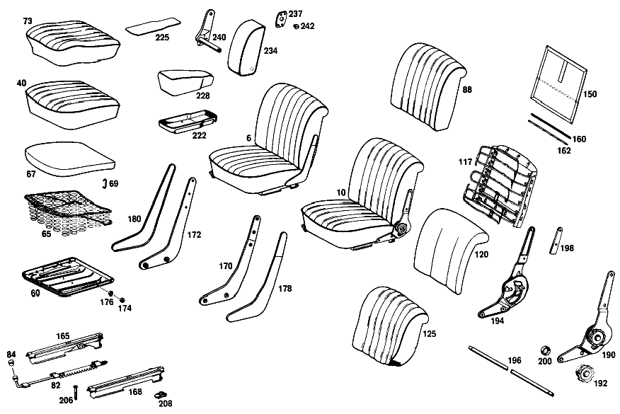

| № | Артикул | Название | Кол. | Примечание | Ограничение |
|---|---|---|---|---|---|
| 10 | A 111 910 33 01 | СИДЕНЬЕ ВОДИТЕЛЯ | 1 | LEFT FABRIC TRIM COMBINED с IMITATION LEATHER [402] БОЛЬШЕ НЕ ПОСТАВЛЯЕТСЯ [061] WHEN ORDERING,STATE COLOR AND CHASSIS NO.AS WELL AS MAKE OF RECLINING SEAT FITTINGS [009] FROM CHASSIS 044445 ALSO INSTALLED ON,SEE FOOTNOTE 91 [091] 044388, 044394, 044399, 044402, 044403, 044404, 044407- 044412, 044414- 044423, 044426- 044434, 044436- 044443. | |
| 40 | A 111 910 21 30 | - ПОДУШКА СИДЕНЬЯ | 1 | LEFT FABRIC TRIM [402] БОЛЬШЕ НЕ ПОСТАВЛЯЕТСЯ [009] FROM CHASSIS 044445 ALSO INSTALLED ON,SEE FOOTNOTE 91 [091] 044388, 044394, 044399, 044402, 044403, 044404, 044407- 044412, 044414- 044423, 044426- 044434, 044436- 044443. | |
| 60 | A 110 910 13 22 | - РАМА ПОДУШКИ | 1 | СЛЕВА [030] 010 FROM CHASSIS 038273;012 UP TO CHASSIS 082145 | |
| 65 | A 110 910 32 40 | - КОРОБ ПРУЖИНЫ | - | ||
| 65 | A 108 910 00 40 | - КОРОБ ПРУЖИНЫ | 2 | [030] 010 FROM CHASSIS 038273;012 UP TO CHASSIS 082145 | |
| 67 | A 111 914 04 14 | - НАКЛАДКА | 2 | для SEAT CUSHIONS WHICH ARE BY 20 MM LOWER [402] БОЛЬШЕ НЕ ПОСТАВЛЯЕТСЯ [032] 010 FROM CHASSIS 010382;012 FROM CHASSIS 021370 | |
| 69 | A 000 984 20 61 | - Скоба | 10 | RUBBER FIBER PADS TO SPRING CORES | |
| 73 | A 111 910 21 46 | - ОБИВКА | 1 | LEFT FABRIC для SEAT CUSHIONS,COMPLETELY SEWN [402] БОЛЬШЕ НЕ ПОСТАВЛЯЕТСЯ [032] 010 FROM CHASSIS 010382;012 FROM CHASSIS 021370 | |
| 82 | A 110 910 69 05 | - ФИКСАТОР | 1 | СИДЕНЬЕ ВОДИТЕЛЯ СЛЕВА | |
| 84 | A 110 919 00 60 | - РУЧКА | 2 | ||
| 88 | A 111 910 07 32 | - СПИНКА СИДЕНЬЯ | 1 | LEFT FABRIC TRIM [402] БОЛЬШЕ НЕ ПОСТАВЛЯЕТСЯ | |
| 117 | A 111 910 05 34 | - РАМА СПИНКИ | 1 | LEFT,с SPRING CORE | |
| 120 | A 110 914 01 16 | - НАКЛАДКА | 1 | LEFT BACKREST [402] БОЛЬШЕ НЕ ПОСТАВЛЯЕТСЯ | |
| 125 | A 111 910 01 47 | - ОБИВКА | 1 | LEFT FABRIC для BACKREST [402] БОЛЬШЕ НЕ ПОСТАВЛЯЕТСЯ | |
| 150 | A 111 910 03 39 | - Обшивка | 1 | LEFT FABRIC TRIM BACKREST [402] БОЛЬШЕ НЕ ПОСТАВЛЯЕТСЯ | |
| 160 | A 111 914 00 32 | - МОЛДИНГ | 2 | ДЛЯ ОБЛИЦОВКИ | |
| 162 | A 111 914 00 73 | - КРЕПЛЕНИЕ | 2 | GARNISH MOULDINGS TO COVERING | |
| 165 | A 110 910 45 05 | - НАПРАВЛЯЮЩАЯ СИДЕНЬЯ | 1 | INSIDE LEFT FRONT SEAT [009] FROM CHASSIS 044445 ALSO INSTALLED ON,SEE FOOTNOTE 91 [091] 044388, 044394, 044399, 044402, 044403, 044404, 044407- 044412, 044414- 044423, 044426- 044434, 044436- 044443. | |
| 168 | A 110 910 47 05 | - НАПРАВЛЯЮЩАЯ СИДЕНЬЯ | 1 | OUTSIDE LEFT FRONT SEAT [009] FROM CHASSIS 044445 ALSO INSTALLED ON,SEE FOOTNOTE 91 [091] 044388, 044394, 044399, 044402, 044403, 044404, 044407- 044412, 044414- 044423, 044426- 044434, 044436- 044443. | |
| 176 | H 10 180 919 00 22 | - КОЛЬЦО ОПОРНОЕ | 2 | BACKRESTS TO SEAT CUSHION [043] 010 UP TO CHASSIS 065150;012 UP TO CHASSIS 145194 | |
| 190 | A 000 910 41 85 | - РЕГУЛИРОВКА СПИНКИ | 1 | LEFT для LEFT SEAT с HANDWHEEL | |
| 192 | A 000 918 02 26 | - МАХОВИЧОК | - | ||
| 194 | A 000 910 42 86 | - РЕГУЛИРОВКА СПИНКИ | 1 | RIGHT для LEFT SEAT [047] 010 UP TO CHASSIS 059187;012 UP TO CHASSIS 130852;TO BE REWORKED,AND EXISTING STOCK TO BE EXHAUSTED | |
| 196 | A 111 918 02 27 | - СОЕДИНЕНИЕ | 2 | BETWEEN LEFT AND RIGHT RECLINING SEAT FITTINGS | |
| 198 | A 000 918 03 96 | - ПОДКЛАДКА | 4 | BETWEEN RECLINING SEAT FITTING AND BACK REST | |
| 200 | H 10 180 919 00 22 | - КОЛЬЦО ОПОРНОЕ | 8 | BACKRESTS TO SEAT CUSHION [043] 010 UP TO CHASSIS 065150;012 UP TO CHASSIS 145194 | |
| 206 | A 110 990 04 20 | БОЛТ | 4 | FRONT SEATS TO FRONT CROSS MEMBERS [002] FROM CHASSIS 021372 ALSO INSTALLED ON 021350,021362-021364 [009] FROM CHASSIS 044445 ALSO INSTALLED ON,SEE FOOTNOTE 91 [091] 044388, 044394, 044399, 044402, 044403, 044404, 044407- 044412, 044414- 044423, 044426- 044434, 044436- 044443. | |
| 208 | A 000 990 42 91 | ГАЙКОДЕРЖАТЕЛЬ | 4 | SEATS TO BRACKETS [002] FROM CHASSIS 021372 ALSO INSTALLED ON 021350,021362-021364 [009] FROM CHASSIS 044445 ALSO INSTALLED ON,SEE FOOTNOTE 91 [091] 044388, 044394, 044399, 044402, 044403, 044404, 044407- 044412, 044414- 044423, 044426- 044434, 044436- 044443. | |
| 222 | A 111 841 02 74 | ЧАШКА | 1 | TRAY BETWEEN THE FRONT SEATS [049] 010 FROM CHASSIS 017622;012 FROM CHASSIS 036139 | |
| 225 | A 110 841 07 90 | ОБИВКА | - | [048] 010 UP TO CHASSIS 003440-017621;012 UP TO CHASSIS 007399-036138 | |
| 234 | A 111 970 20 30 | ПОДЛОКОТНИК ОТКИДН. | - | ||
| 234 | A 110 970 58 30 | ПОДЛОКОТНИК ОТКИДН. | 1 | ТКАНЬ ОБИВКИ [402] БОЛЬШЕ НЕ ПОСТАВЛЯЕТСЯ | |
| 237 | A 112 973 02 11 | ПЛАСТИНА | 1 | СНАРУЖИ | |
| 240 | A 112 970 18 20 | ПОДШИПНИК | 1 | APPLICABLE TO CARS с RECLINING SEAT FITTINGS AND BOLTED\-ON BACKREST BRACKETS Рулевое управление: Влево [059] 010 FROM CHASSIS 008878;012 FROM CHASSIS 018622 | |
| 242 | A 112 973 00 71 | БОЛТ | 1 | ARMRESTS TO SUPPORTS | |
| 253 | A 111 910 39 01 | СИДЕНЬЕ ВОДИТЕЛЯ | 1 | FRONT SEAT BENCH FABRIC TRIM,FULL\-FLUTED Рулевое управление: Влево [060] WHEN ORDERING,STATE COLOR AND CHASSIS NUMBER [009] FROM CHASSIS 044445 ALSO INSTALLED ON,SEE FOOTNOTE 91 [091] 044388, 044394, 044399, 044402, 044403, 044404, 044407- 044412, 044414- 044423, 044426- 044434, 044436- 044443. | |
| 270 | A 111 910 27 30 | - ПОДУШКА СИДЕНЬЯ | 1 | с ADJUSTER FABRIC TRIM,FULL\-FLUTED Рулевое управление: Влево [009] FROM CHASSIS 044445 ALSO INSTALLED ON,SEE FOOTNOTE 91 [091] 044388, 044394, 044399, 044402, 044403, 044404, 044407- 044412, 044414- 044423, 044426- 044434, 044436- 044443. | |
| 282 | A 110 910 02 22 | - РАМА ПОДУШКИ | - | ||
| 284 | A 110 910 75 05 | - ФИКСАТОР | 1 | ПЕР. МНОГОМЕСТН. СИДЕНЬЕ Рулевое управление: Влево | |
| 288 | A 110 919 00 60 | - РУЧКА | 1 | ||
| 290 | A 110 919 02 27 | - ТЯГА СОЕДИНИТЕЛЬНАЯ | 1 | BENT для FRONT SEAT BENCH ADJUSTERS | |
| 292 | A 110 919 03 27 | - ТЯГА СОЕДИНИТЕЛЬНАЯ | 1 | STRAIGHT для FRONT SEAT BENCH ADJUSTERS | |
| 295 | H 10 120 912 03 36 | - ПРУЖИНА | - | [415] ПРИМЕЧ. ПО ЗАМЕНЕ ПРИМЕНИМО ТОЛЬКО ДЛЯ СТОЯЩИХ РЯДОМ ПОЗИЦИЙ | |
| 297 | A 110 910 16 40 | - КОРОБ ПРУЖИНЫ | 1 | ПОДУШКА СИДЕНЬЯ | |
| 299 | A 111 914 03 14 | - НАКЛАДКА | 1 | ПОДУШКА СИДЕНЬЯ | |
| 301 | A 111 910 11 46 | - ОБИВКА | 1 | FABRIC для SEAT CUSHION [402] БОЛЬШЕ НЕ ПОСТАВЛЯЕТСЯ | |
| 307 | A 111 910 31 32 | - СПИНКА СИДЕНЬЯ | 1 | FABRIC TRIM,FULL\-FLUTED [060] WHEN ORDERING,STATE COLOR AND CHASSIS NUMBER | |
| 315 | A 110 910 08 34 | - РАМА СПИНКИ | 1 | ||
| 320 | A 110 910 01 41 | - КОРОБ ПРУЖИНЫ | 1 | LEFT BACKREST | |
| 322 | A 110 910 02 41 | - КОРОБ ПРУЖИНЫ | 1 | RIGHT BACKREST | |
| 324 | A 111 914 06 16 | - НАКЛАДКА | 1 | СПИНКА СИДЕНЬЯ | |
| 326 | A 000 984 20 61 | - Скоба | 44 | RUBBER FIBER PAD TO SPRING CORES | |
| 328 | A 111 910 33 47 | - ОБИВКА | 1 | FABRIC для BACKREST [402] БОЛЬШЕ НЕ ПОСТАВЛЯЕТСЯ [085] FROM CHASSIS 031427 | |
| 334 | A 111 910 21 39 | - Обшивка | 1 | FABRIC для BACKREST [402] БОЛЬШЕ НЕ ПОСТАВЛЯЕТСЯ | |
| 337 | A 111 914 01 32 | - МОЛДИНГ | 1 | для BACKREST COVERING | |
| 339 | A 111 914 01 73 | - КРЕПЛЕНИЕ | 1 | GARNISH MOULDING TO COVERING | |
| 342 | A 000 910 46 86 | - РЕГУЛИРОВКА СПИНКИ | 1 | RIGHT,без HANDWHEEL Рулевое управление: Влево | |
| 344 | A 000 910 41 85 | - РЕГУЛИРОВКА СПИНКИ | 1 | LEFT,с HANDWHEEL Рулевое управление: Влево | |
| 346 | A 000 918 02 26 | - МАХОВИЧОК | - | ||
| 348 | A 111 918 03 27 | - СОЕДИНЕНИЕ | 1 | ||
| 350 | A 110 918 01 33 | - ПЛАНКА | 2 | ||
| 352 | H 10 180 919 00 22 | - КОЛЬЦО ОПОРНОЕ | 4 | СПИНКА НА ПОДУШКЕ СИД. [090] 010 UP TO CHASSIS 064150;012 UP TO CHASSIS 145194 | |
| 354 | A 000 990 25 31 | - БОЛТ | - | ||
| 354 | A 108 990 00 30 | - БОЛТ | 4 | с SYNTHETIC LOCK BACKREST TO SEAT CUSHION | |
| 356 | A 110 910 49 05 | НАПРАВЛЯЮЩАЯ СИДЕНЬЯ | 1 | [009] FROM CHASSIS 044445 ALSO INSTALLED ON,SEE FOOTNOTE 91 [091] 044388, 044394, 044399, 044402, 044403, 044404, 044407- 044412, 044414- 044423, 044426- 044434, 044436- 044443. | |
| 359 | A 110 910 51 05 | НАПРАВЛЯЮЩАЯ СИДЕНЬЯ | 1 | [009] FROM CHASSIS 044445 ALSO INSTALLED ON,SEE FOOTNOTE 91 [091] 044388, 044394, 044399, 044402, 044403, 044404, 044407- 044412, 044414- 044423, 044426- 044434, 044436- 044443. | |
| A 111 910 01 01 | СИДЕНЬЕ ВОДИТЕЛЯ | - | |||
| A 111 910 02 01 | СИДЕНЬЕ ВОДИТЕЛЯ | - | |||
| A 111 910 31 01 | СИДЕНЬЕ ВОДИТЕЛЯ | 1 | LEFT FABRIC TRIM COMBINED с IMITATION LEATHER [008] UP TO CHASSIS 044444 EXCEPT FOR,SEE FOOTNOTE 91 [091] 044388, 044394, 044399, 044402, 044403, 044404, 044407- 044412, 044414- 044423, 044426- 044434, 044436- 044443. [061] WHEN ORDERING,STATE COLOR AND CHASSIS NO.AS WELL AS MAKE OF RECLINING SEAT FITTINGS | ||
| A 111 910 32 01 | СИДЕНЬЕ ВОДИТЕЛЯ | 1 | RIGHT FABRIC TRIM COMBINED с IMITATION LEATHER [008] UP TO CHASSIS 044444 EXCEPT FOR,SEE FOOTNOTE 91 [091] 044388, 044394, 044399, 044402, 044403, 044404, 044407- 044412, 044414- 044423, 044426- 044434, 044436- 044443. [061] WHEN ORDERING,STATE COLOR AND CHASSIS NO.AS WELL AS MAKE OF RECLINING SEAT FITTINGS | ||
| A 111 910 34 01 | СИДЕНЬЕ ВОДИТЕЛЯ | 1 | RIGHT FABRIC TRIM COMBINED с IMITATION LEATHER [402] БОЛЬШЕ НЕ ПОСТАВЛЯЕТСЯ [061] WHEN ORDERING,STATE COLOR AND CHASSIS NO.AS WELL AS MAKE OF RECLINING SEAT FITTINGS [009] FROM CHASSIS 044445 ALSO INSTALLED ON,SEE FOOTNOTE 91 [091] 044388, 044394, 044399, 044402, 044403, 044404, 044407- 044412, 044414- 044423, 044426- 044434, 044436- 044443. | ||
| A 111 910 23 09 | СИДЕНЬЕ ВОДИТЕЛЯ | 1 | LEFT с REINFORCED SPRING CORE FABRIC TRIM COMBINED WITH IMITATION LEATHER [402] БОЛЬШЕ НЕ ПОСТАВЛЯЕТСЯ [007] ON SPECIAL REQUEST,REINFORCED SPRING CORE [061] WHEN ORDERING,STATE COLOR AND CHASSIS NO.AS WELL AS MAKE OF RECLINING SEAT FITTINGS | ||
| A 111 910 24 09 | СИДЕНЬЕ ВОДИТЕЛЯ | 1 | RIGHT с REINFORCED SPRING CORE FABRIC TRIM COMBINED WITH IMITATION LEATHER [402] БОЛЬШЕ НЕ ПОСТАВЛЯЕТСЯ [007] ON SPECIAL REQUEST,REINFORCED SPRING CORE [061] WHEN ORDERING,STATE COLOR AND CHASSIS NO.AS WELL AS MAKE OF RECLINING SEAT FITTINGS | ||
| A 111 910 29 01 | СИДЕНЬЕ ВОДИТЕЛЯ | 1 | LEFT LEATHER TRIM [008] UP TO CHASSIS 044444 EXCEPT FOR,SEE FOOTNOTE 91 [091] 044388, 044394, 044399, 044402, 044403, 044404, 044407- 044412, 044414- 044423, 044426- 044434, 044436- 044443. [061] WHEN ORDERING,STATE COLOR AND CHASSIS NO.AS WELL AS MAKE OF RECLINING SEAT FITTINGS | ||
| A 111 910 30 01 | СИДЕНЬЕ ВОДИТЕЛЯ | 1 | RIGHT LEATHER TRIM [008] UP TO CHASSIS 044444 EXCEPT FOR,SEE FOOTNOTE 91 [091] 044388, 044394, 044399, 044402, 044403, 044404, 044407- 044412, 044414- 044423, 044426- 044434, 044436- 044443. [061] WHEN ORDERING,STATE COLOR AND CHASSIS NO.AS WELL AS MAKE OF RECLINING SEAT FITTINGS | ||
| A 111 910 45 01 | СИДЕНЬЕ ВОДИТЕЛЯ | 1 | LEFT LEATHER TRIM [061] WHEN ORDERING,STATE COLOR AND CHASSIS NO.AS WELL AS MAKE OF RECLINING SEAT FITTINGS [012] FROM CHASSIS 044445-090858 | ||
| A 111 910 46 01 | СИДЕНЬЕ ВОДИТЕЛЯ | 1 | RIGHT LEATHER TRIM [061] WHEN ORDERING,STATE COLOR AND CHASSIS NO.AS WELL AS MAKE OF RECLINING SEAT FITTINGS [012] FROM CHASSIS 044445-090858 | ||
| A 111 910 43 09 | СИДЕНЬЕ ВОДИТЕЛЯ | 1 | LEFT PERFORATED LEATHER TRIM [402] БОЛЬШЕ НЕ ПОСТАВЛЯЕТСЯ [061] WHEN ORDERING,STATE COLOR AND CHASSIS NO.AS WELL AS MAKE OF RECLINING SEAT FITTINGS [013] FROM CHASSIS 090859 | ||
| A 111 910 44 09 | СИДЕНЬЕ ВОДИТЕЛЯ | 1 | RIGHT PERFORATED LEATHER TRIM [402] БОЛЬШЕ НЕ ПОСТАВЛЯЕТСЯ [061] WHEN ORDERING,STATE COLOR AND CHASSIS NO.AS WELL AS MAKE OF RECLINING SEAT FITTINGS [013] FROM CHASSIS 090859 | ||
| A 111 910 27 09 | СИДЕНЬЕ ВОДИТЕЛЯ | 1 | LEFT с REINFORCED SPRING CORE LEATHER TRIM [007] ON SPECIAL REQUEST,REINFORCED SPRING CORE [061] WHEN ORDERING,STATE COLOR AND CHASSIS NO.AS WELL AS MAKE OF RECLINING SEAT FITTINGS | ||
| A 111 910 28 09 | СИДЕНЬЕ ВОДИТЕЛЯ | 1 | RIGHT с REINFORCED SPRING CORE LEATHER TRIM [007] ON SPECIAL REQUEST,REINFORCED SPRING CORE [061] WHEN ORDERING,STATE COLOR AND CHASSIS NO.AS WELL AS MAKE OF RECLINING SEAT FITTINGS | ||
| A 111 910 09 01 | СИДЕНЬЕ ВОДИТЕЛЯ | 1 | LEFT IMITATION LEATHER TRIM [008] UP TO CHASSIS 044444 EXCEPT FOR,SEE FOOTNOTE 91 [091] 044388, 044394, 044399, 044402, 044403, 044404, 044407- 044412, 044414- 044423, 044426- 044434, 044436- 044443. [061] WHEN ORDERING,STATE COLOR AND CHASSIS NO.AS WELL AS MAKE OF RECLINING SEAT FITTINGS | ||
| A 111 910 10 01 | СИДЕНЬЕ ВОДИТЕЛЯ | 1 | RIGHT IMITATION LEATHER TRIM [008] UP TO CHASSIS 044444 EXCEPT FOR,SEE FOOTNOTE 91 [091] 044388, 044394, 044399, 044402, 044403, 044404, 044407- 044412, 044414- 044423, 044426- 044434, 044436- 044443. [061] WHEN ORDERING,STATE COLOR AND CHASSIS NO.AS WELL AS MAKE OF RECLINING SEAT FITTINGS | ||
| A 111 910 47 01 | СИДЕНЬЕ ВОДИТЕЛЯ | 1 | LEFT IMITATION LEATHER TRIM [402] БОЛЬШЕ НЕ ПОСТАВЛЯЕТСЯ [061] WHEN ORDERING,STATE COLOR AND CHASSIS NO.AS WELL AS MAKE OF RECLINING SEAT FITTINGS [019] FROM CHASSIS 044445-064964 | ||
| A 111 910 48 01 | СИДЕНЬЕ ВОДИТЕЛЯ | 1 | RIGHT IMITATION LEATHER TRIM [402] БОЛЬШЕ НЕ ПОСТАВЛЯЕТСЯ [061] WHEN ORDERING,STATE COLOR AND CHASSIS NO.AS WELL AS MAKE OF RECLINING SEAT FITTINGS [019] FROM CHASSIS 044445-064964 | ||
| A 111 910 19 09 | СИДЕНЬЕ ВОДИТЕЛЯ | 1 | LEFT IMITATION LEATHER TRIM [061] WHEN ORDERING,STATE COLOR AND CHASSIS NO.AS WELL AS MAKE OF RECLINING SEAT FITTINGS [020] FROM CHASSIS 064965-116295 | ||
| A 111 910 20 09 | СИДЕНЬЕ ВОДИТЕЛЯ | 1 | RIGHT IMITATION LEATHER TRIM [061] WHEN ORDERING,STATE COLOR AND CHASSIS NO.AS WELL AS MAKE OF RECLINING SEAT FITTINGS [020] FROM CHASSIS 064965-116295 | ||
| A 111 910 07 12 | СИДЕНЬЕ ВОДИТЕЛЯ | 1 | LEFT IMITATION LEATHER TRIM [061] WHEN ORDERING,STATE COLOR AND CHASSIS NO.AS WELL AS MAKE OF RECLINING SEAT FITTINGS [021] FROM CHASSIS 116296-130012 | ||
| A 111 910 08 12 | СИДЕНЬЕ ВОДИТЕЛЯ | 1 | RIGHT IMITATION LEATHER TRIM [061] WHEN ORDERING,STATE COLOR AND CHASSIS NO.AS WELL AS MAKE OF RECLINING SEAT FITTINGS [021] FROM CHASSIS 116296-130012 | ||
| A 111 910 15 12 | СИДЕНЬЕ ВОДИТЕЛЯ | 1 | LEFT IMITATION LEATHER TRIM [402] БОЛЬШЕ НЕ ПОСТАВЛЯЕТСЯ [061] WHEN ORDERING,STATE COLOR AND CHASSIS NO.AS WELL AS MAKE OF RECLINING SEAT FITTINGS [022] FROM CHASSIS 130013 WELDED UPHOLSTERY | ||
| A 111 910 16 12 | СИДЕНЬЕ ВОДИТЕЛЯ | 1 | RIGHT IMITATION LEATHER TRIM [402] БОЛЬШЕ НЕ ПОСТАВЛЯЕТСЯ [061] WHEN ORDERING,STATE COLOR AND CHASSIS NO.AS WELL AS MAKE OF RECLINING SEAT FITTINGS [022] FROM CHASSIS 130013 WELDED UPHOLSTERY | ||
| A 111 910 29 09 | СИДЕНЬЕ ВОДИТЕЛЯ | 1 | LEFT с REINFORCED SPRING CORE IMITATION LEATHER TRIM [007] ON SPECIAL REQUEST,REINFORCED SPRING CORE [061] WHEN ORDERING,STATE COLOR AND CHASSIS NO.AS WELL AS MAKE OF RECLINING SEAT FITTINGS [023] UP TO CHASSIS 116295 | ||
| A 111 910 30 09 | СИДЕНЬЕ ВОДИТЕЛЯ | 1 | RIGHT с REINFORCED SPRING CORE IMITATION LEATHER TRIM [007] ON SPECIAL REQUEST,REINFORCED SPRING CORE [061] WHEN ORDERING,STATE COLOR AND CHASSIS NO.AS WELL AS MAKE OF RECLINING SEAT FITTINGS [023] UP TO CHASSIS 116295 | ||
| A 111 910 09 12 | СИДЕНЬЕ ВОДИТЕЛЯ | 1 | LEFT с REINFORCED SPRING CORE IMITATION LEATHER TRIM [007] ON SPECIAL REQUEST,REINFORCED SPRING CORE [061] WHEN ORDERING,STATE COLOR AND CHASSIS NO.AS WELL AS MAKE OF RECLINING SEAT FITTINGS [021] FROM CHASSIS 116296-130012 | ||
| A 111 910 10 12 | СИДЕНЬЕ ВОДИТЕЛЯ | 1 | RIGHT с REINFORCED SPRING CORE IMITATION LEATHER TRIM [007] ON SPECIAL REQUEST,REINFORCED SPRING CORE [061] WHEN ORDERING,STATE COLOR AND CHASSIS NO.AS WELL AS MAKE OF RECLINING SEAT FITTINGS [021] FROM CHASSIS 116296-130012 | ||
| A 111 910 19 12 | СИДЕНЬЕ ВОДИТЕЛЯ | 1 | LEFT с REINFORCED SPRING CORE IMITATION LEATHER TRIM [007] ON SPECIAL REQUEST,REINFORCED SPRING CORE [061] WHEN ORDERING,STATE COLOR AND CHASSIS NO.AS WELL AS MAKE OF RECLINING SEAT FITTINGS [022] FROM CHASSIS 130013 WELDED UPHOLSTERY | ||
| A 111 910 20 12 | СИДЕНЬЕ ВОДИТЕЛЯ | 1 | RIGHT с REINFORCED SPRING CORE IMITATION LEATHER TRIM [007] ON SPECIAL REQUEST,REINFORCED SPRING CORE [061] WHEN ORDERING,STATE COLOR AND CHASSIS NO.AS WELL AS MAKE OF RECLINING SEAT FITTINGS [022] FROM CHASSIS 130013 WELDED UPHOLSTERY | ||
| A 111 910 01 30 | - ПОДУШКА СИДЕНЬЯ | - | |||
| A 111 910 02 30 | - ПОДУШКА СИДЕНЬЯ | - | |||
| A 111 910 19 30 | - ПОДУШКА СИДЕНЬЯ | 1 | LEFT FABRIC TRIM [402] БОЛЬШЕ НЕ ПОСТАВЛЯЕТСЯ [008] UP TO CHASSIS 044444 EXCEPT FOR,SEE FOOTNOTE 91 [091] 044388, 044394, 044399, 044402, 044403, 044404, 044407- 044412, 044414- 044423, 044426- 044434, 044436- 044443. | ||
| A 111 910 20 30 | - ПОДУШКА СИДЕНЬЯ | 1 | RIGHT FABRIC TRIM [402] БОЛЬШЕ НЕ ПОСТАВЛЯЕТСЯ [008] UP TO CHASSIS 044444 EXCEPT FOR,SEE FOOTNOTE 91 [091] 044388, 044394, 044399, 044402, 044403, 044404, 044407- 044412, 044414- 044423, 044426- 044434, 044436- 044443. | ||
| A 111 910 22 30 | - ПОДУШКА СИДЕНЬЯ | 1 | RIGHT FABRIC TRIM [402] БОЛЬШЕ НЕ ПОСТАВЛЯЕТСЯ [009] FROM CHASSIS 044445 ALSO INSTALLED ON,SEE FOOTNOTE 91 [091] 044388, 044394, 044399, 044402, 044403, 044404, 044407- 044412, 044414- 044423, 044426- 044434, 044436- 044443. | ||
| A 110 910 45 30 | - ПОДУШКА СИДЕНЬЯ | - | |||
| A 111 910 45 30 | - ПОДУШКА СИДЕНЬЯ | 1 | LEFT с REINFORCED SPRING CORE FABRIC TRIM [402] БОЛЬШЕ НЕ ПОСТАВЛЯЕТСЯ [007] ON SPECIAL REQUEST,REINFORCED SPRING CORE | ||
| A 110 910 46 30 | - ПОДУШКА СИДЕНЬЯ | - | |||
| A 111 910 46 30 | - ПОДУШКА СИДЕНЬЯ | 1 | RIGHT с REINFORCED SPRING CORE FABRIC TRIM [402] БОЛЬШЕ НЕ ПОСТАВЛЯЕТСЯ [007] ON SPECIAL REQUEST,REINFORCED SPRING CORE | ||
| A 110 910 05 30 | - ПОДУШКА СИДЕНЬЯ | 1 | LEFT LEATHER TRIM [008] UP TO CHASSIS 044444 EXCEPT FOR,SEE FOOTNOTE 91 [091] 044388, 044394, 044399, 044402, 044403, 044404, 044407- 044412, 044414- 044423, 044426- 044434, 044436- 044443. | ||
| A 110 910 06 30 | - ПОДУШКА СИДЕНЬЯ | 1 | RIGHT LEATHER TRIM [008] UP TO CHASSIS 044444 EXCEPT FOR,SEE FOOTNOTE 91 [091] 044388, 044394, 044399, 044402, 044403, 044404, 044407- 044412, 044414- 044423, 044426- 044434, 044436- 044443. | ||
| A 111 910 39 30 | - ПОДУШКА СИДЕНЬЯ | 1 | LEFT LEATHER TRIM [012] FROM CHASSIS 044445-090858 | ||
| A 111 910 40 30 | - ПОДУШКА СИДЕНЬЯ | 1 | RIGHT LEATHER TRIM [012] FROM CHASSIS 044445-090858 | ||
| A 111 910 07 31 | - ПОДУШКА СИДЕНЬЯ | 1 | LEFT PERFORATED LEATHER TRIM [013] FROM CHASSIS 090859 | ||
| A 111 910 08 31 | - ПОДУШКА СИДЕНЬЯ | 1 | RIGHT PERFORATED LEATHER TRIM [013] FROM CHASSIS 090859 | ||
| A 110 910 61 30 | - ПОДУШКА СИДЕНЬЯ | 1 | LEFT с REINFORCED SPRING CORE LEATHER TRIM [007] ON SPECIAL REQUEST,REINFORCED SPRING CORE | ||
| A 110 910 62 30 | - ПОДУШКА СИДЕНЬЯ | 1 | RIGHT с REINFORCED SPRING CORE LEATHER TRIM [007] ON SPECIAL REQUEST,REINFORCED SPRING CORE | ||
| A 111 910 09 30 | - ПОДУШКА СИДЕНЬЯ | 1 | LEFT IMITATION LEATHER TRIM [008] UP TO CHASSIS 044444 EXCEPT FOR,SEE FOOTNOTE 91 [091] 044388, 044394, 044399, 044402, 044403, 044404, 044407- 044412, 044414- 044423, 044426- 044434, 044436- 044443. | ||
| A 111 910 10 30 | - ПОДУШКА СИДЕНЬЯ | 1 | RIGHT IMITATION LEATHER TRIM [008] UP TO CHASSIS 044444 EXCEPT FOR,SEE FOOTNOTE 91 [091] 044388, 044394, 044399, 044402, 044403, 044404, 044407- 044412, 044414- 044423, 044426- 044434, 044436- 044443. | ||
| A 111 910 31 30 | - ПОДУШКА СИДЕНЬЯ | 1 | LEFT IMITATION LEATHER TRIM [019] FROM CHASSIS 044445-064964 | ||
| A 111 910 32 30 | - ПОДУШКА СИДЕНЬЯ | 1 | RIGHT IMITATION LEATHER TRIM [019] FROM CHASSIS 044445-064964 | ||
| A 111 910 43 30 | - ПОДУШКА СИДЕНЬЯ | 1 | LEFT IMITATION LEATHER TRIM [020] FROM CHASSIS 064965-116295 | ||
| A 111 910 44 30 | - ПОДУШКА СИДЕНЬЯ | 1 | RIGHT IMITATION LEATHER TRIM [020] FROM CHASSIS 064965-116295 | ||
| A 111 910 11 31 | - ПОДУШКА СИДЕНЬЯ | 1 | LEFT IMITATION LEATHER TRIM [021] FROM CHASSIS 116296-130012 | ||
| A 111 910 12 31 | - ПОДУШКА СИДЕНЬЯ | 1 | RIGHT IMITATION LEATHER TRIM [021] FROM CHASSIS 116296-130012 | ||
| A 111 910 17 31 | - ПОДУШКА СИДЕНЬЯ | 1 | LEFT IMITATION LEATHER TRIM [402] БОЛЬШЕ НЕ ПОСТАВЛЯЕТСЯ [022] FROM CHASSIS 130013 WELDED UPHOLSTERY | ||
| A 111 910 18 31 | - ПОДУШКА СИДЕНЬЯ | 1 | RIGHT IMITATION LEATHER TRIM [402] БОЛЬШЕ НЕ ПОСТАВЛЯЕТСЯ [022] FROM CHASSIS 130013 WELDED UPHOLSTERY | ||
| A 111 910 47 30 | - ПОДУШКА СИДЕНЬЯ | 1 | LEFT с REINFORCED SPRING CORE IMITATION LEATHER TRIM [007] ON SPECIAL REQUEST,REINFORCED SPRING CORE [023] UP TO CHASSIS 116295 | ||
| A 111 910 48 30 | - ПОДУШКА СИДЕНЬЯ | 1 | RIGHT с REINFORCED SPRING CORE IMITATION LEATHER TRIM [007] ON SPECIAL REQUEST,REINFORCED SPRING CORE [023] UP TO CHASSIS 116295 | ||
| A 111 910 13 31 | - ПОДУШКА СИДЕНЬЯ | 1 | LEFT с REINFORCED SPRING CORE IMITATION LEATHER TRIM [402] БОЛЬШЕ НЕ ПОСТАВЛЯЕТСЯ [007] ON SPECIAL REQUEST,REINFORCED SPRING CORE [021] FROM CHASSIS 116296-130012 | ||
| A 111 910 14 31 | - ПОДУШКА СИДЕНЬЯ | 1 | RIGHT с REINFORCED SPRING CORE IMITATION LEATHER TRIM [402] БОЛЬШЕ НЕ ПОСТАВЛЯЕТСЯ [007] ON SPECIAL REQUEST,REINFORCED SPRING CORE [021] FROM CHASSIS 116296-130012 | ||
| A 110 910 89 30 | - ПОДУШКА СИДЕНЬЯ | 1 | LEFT с REINFORCED SPRING CORE IMITATION LEATHER TRIM [402] БОЛЬШЕ НЕ ПОСТАВЛЯЕТСЯ [007] ON SPECIAL REQUEST,REINFORCED SPRING CORE [022] FROM CHASSIS 130013 WELDED UPHOLSTERY | ||
| A 110 910 90 30 | - ПОДУШКА СИДЕНЬЯ | 1 | RIGHT с REINFORCED SPRING CORE IMITATION LEATHER TRIM [402] БОЛЬШЕ НЕ ПОСТАВЛЯЕТСЯ [007] ON SPECIAL REQUEST,REINFORCED SPRING CORE [022] FROM CHASSIS 130013 WELDED UPHOLSTERY | ||
| A 110 910 03 22 | - РАМА ПОДУШКИ | - | [029] 010 UP TO CHASSIS 038272;012 UP TO CHASSIS 082144 | ||
| A 110 910 04 22 | - РАМА ПОДУШКИ | - | [029] 010 UP TO CHASSIS 038272;012 UP TO CHASSIS 082144 | ||
| A 110 910 14 22 | - РАМА ПОДУШКИ | 1 | СПРАВА [030] 010 FROM CHASSIS 038273;012 UP TO CHASSIS 082145 | ||
| A 110 910 03 40 | - КОРОБ ПРУЖИНЫ | - | [029] 010 UP TO CHASSIS 038272;012 UP TO CHASSIS 082144 | ||
| A 110 910 09 40 | - КОРОБ ПРУЖИНЫ | - | [029] 010 UP TO CHASSIS 038272;012 UP TO CHASSIS 082144 | ||
| A 110 910 19 40 | - КОРОБ ПРУЖИНЫ | - | [029] 010 UP TO CHASSIS 038272;012 UP TO CHASSIS 082144 | ||
| A 110 910 04 40 | - КОРОБ ПРУЖИНЫ | - | [029] 010 UP TO CHASSIS 038272;012 UP TO CHASSIS 082144 | ||
| A 110 910 10 40 | - КОРОБ ПРУЖИНЫ | - | [029] 010 UP TO CHASSIS 038272;012 UP TO CHASSIS 082144 | ||
| A 110 910 20 40 | - КОРОБ ПРУЖИНЫ | - | [029] 010 UP TO CHASSIS 038272;012 UP TO CHASSIS 082144 | ||
| A 110 910 30 40 | - КОРОБ ПРУЖИНЫ | - | |||
| A 110 910 39 40 | - КОРОБ ПРУЖИНЫ | - | |||
| A 108 910 23 40 | - КОРОБ ПРУЖИНЫ | - | |||
| A 116 910 03 40 | - КОРОБ ПРУЖИНЫ | 2 | УСИЛЕН. [007] ON SPECIAL REQUEST,REINFORCED SPRING CORE | ||
| A 111 914 02 14 | - НАКЛАДКА | - | |||
| A 111 914 01 14 | - НАКЛАДКА | 2 | [031] 010 UP TO CHASSIS 010381;012 UP TO CHASSIS 021369 | ||
| A 111 910 03 46 | - ОБИВКА | 1 | LEFT FABRIC для SEAT CUSHIONS,COMPLETELY SEWN [031] 010 UP TO CHASSIS 010381;012 UP TO CHASSIS 021369 | ||
| A 111 910 04 46 | - ОБИВКА | 1 | RIGHT FABRIC для SEAT CUSHIONS,COMPLETELY SEWN [031] 010 UP TO CHASSIS 010381;012 UP TO CHASSIS 021369 | ||
| A 111 910 22 46 | - ОБИВКА | 1 | RIGHT FABRIC для SEAT CUSHIONS,COMPLETELY SEWN [402] БОЛЬШЕ НЕ ПОСТАВЛЯЕТСЯ [032] 010 FROM CHASSIS 010382;012 FROM CHASSIS 021370 | ||
| A 110 910 31 46 | - ОБИВКА | 1 | LEFT LEATHER для SEAT CUSHIONS,COMPLETELY SEWN [402] БОЛЬШЕ НЕ ПОСТАВЛЯЕТСЯ [028] UP TO CHASSIS 090858 | ||
| A 110 910 32 46 | - ОБИВКА | 1 | RIGHT LEATHER для SEAT CUSHIONS,COMPLETELY SEWN [402] БОЛЬШЕ НЕ ПОСТАВЛЯЕТСЯ [028] UP TO CHASSIS 090858 | ||
| A 110 910 57 46 | - ОБИВКА | 1 | LEFT PERFORATED LEATHER для SEAT CUSHIONS,COMPLETELY SEWN [402] БОЛЬШЕ НЕ ПОСТАВЛЯЕТСЯ [013] FROM CHASSIS 090859 | ||
| A 110 910 58 46 | - ОБИВКА | 1 | RIGHT PERFORATED LEATHER для SEAT CUSHIONS,COMPLETELY SEWN [402] БОЛЬШЕ НЕ ПОСТАВЛЯЕТСЯ [013] FROM CHASSIS 090859 | ||
| A 111 910 27 46 | - ОБИВКА | 1 | LEFT IMITATION LEATHER,FULL\-FLUTED для SEAT CUSHIONS,COMPLETELY SEWN [402] БОЛЬШЕ НЕ ПОСТАВЛЯЕТСЯ [034] UP TO CHASSIS 064964 | ||
| A 111 910 28 46 | - ОБИВКА | 1 | RIGHT IMITATION LEATHER,FULL\-FLUTED для SEAT CUSHIONS,COMPLETELY SEWN [402] БОЛЬШЕ НЕ ПОСТАВЛЯЕТСЯ [034] UP TO CHASSIS 064964 | ||
| A 111 910 35 46 | - ОБИВКА | 1 | LEFT IMITATION LEATHER,FULL\-FLUTED для SEAT CUSHIONS,COMPLETELY SEWN [402] БОЛЬШЕ НЕ ПОСТАВЛЯЕТСЯ [020] FROM CHASSIS 064965-116295 | ||
| A 111 910 36 46 | - ОБИВКА | 1 | RIGHT IMITATION LEATHER,FULL\-FLUTED для SEAT CUSHIONS,COMPLETELY SEWN [402] БОЛЬШЕ НЕ ПОСТАВЛЯЕТСЯ [020] FROM CHASSIS 064965-116295 | ||
| A 111 910 03 92 | - ОБИВКА | 1 | LEFT IMITATION LEATHER,FULL\-FLUTED для SEAT CUSHIONS,COMPLETELY SEWN [402] БОЛЬШЕ НЕ ПОСТАВЛЯЕТСЯ [021] FROM CHASSIS 116296-130012 | ||
| A 111 910 04 92 | - ОБИВКА | 1 | RIGHT IMITATION LEATHER,FULL\-FLUTED для SEAT CUSHIONS,COMPLETELY SEWN [402] БОЛЬШЕ НЕ ПОСТАВЛЯЕТСЯ [021] FROM CHASSIS 116296-130012 | ||
| A 110 910 61 46 | - ОБИВКА | 1 | LEFT IMITATION LEATHER,FULL\-FLUTED для SEAT CUSHIONS,COMPLETELY SEWN [402] БОЛЬШЕ НЕ ПОСТАВЛЯЕТСЯ [022] FROM CHASSIS 130013 WELDED UPHOLSTERY | ||
| A 110 910 62 46 | - ОБИВКА | 1 | RIGHT IMITATION LEATHER,FULL\-FLUTED для SEAT CUSHIONS,COMPLETELY SEWN [402] БОЛЬШЕ НЕ ПОСТАВЛЯЕТСЯ [022] FROM CHASSIS 130013 WELDED UPHOLSTERY | ||
| H 10 120 910 17 05 | - ФИКСАТОР | - | |||
| A 110 910 27 05 | - ФИКСАТОР | - | |||
| A 110 910 31 05 | - ФИКСАТОР | - | |||
| H 10 120 910 18 05 | - ФИКСАТОР | - | |||
| A 110 910 28 05 | - ФИКСАТОР | - | |||
| A 110 910 32 05 | - ФИКСАТОР | - | |||
| A 110 910 70 05 | - ФИКСАТОР | 1 | СИДЕНЬЕ ВОДИТЕЛЯ СПРАВА | ||
| H 12 136 919 00 60 | - РУЧКА | - | |||
| A 000 990 05 30 | - БОЛТ | 12 | ADJUSTER TO SEAT FRAME | ||
| A 000 990 50 91 | - ГАЙКОДЕРЖАТЕЛЬ | - | |||
| A 000 990 74 91 | - ГАЙКОДЕРЖАТЕЛЬ | 6 | ADJUSTER TO SEAT FRAME | ||
| A 111 910 08 32 | - СПИНКА СИДЕНЬЯ | 1 | RIGHT FABRIC TRIM [402] БОЛЬШЕ НЕ ПОСТАВЛЯЕТСЯ | ||
| A 111 910 35 32 | - СПИНКА СИДЕНЬЯ | 1 | LEFT LEATHER TRIM [402] БОЛЬШЕ НЕ ПОСТАВЛЯЕТСЯ [028] UP TO CHASSIS 090858 | ||
| A 111 910 36 32 | - СПИНКА СИДЕНЬЯ | 1 | RIGHT LEATHER TRIM [402] БОЛЬШЕ НЕ ПОСТАВЛЯЕТСЯ [028] UP TO CHASSIS 090858 | ||
| A 111 910 01 33 | - СПИНКА СИДЕНЬЯ | 1 | LEFT PERFORATED LEATHER TRIM [402] БОЛЬШЕ НЕ ПОСТАВЛЯЕТСЯ [013] FROM CHASSIS 090859 | ||
| A 111 910 02 33 | - СПИНКА СИДЕНЬЯ | 1 | RIGHT PERFORATED LEATHER TRIM [402] БОЛЬШЕ НЕ ПОСТАВЛЯЕТСЯ [013] FROM CHASSIS 090859 | ||
| A 111 910 37 32 | - СПИНКА СИДЕНЬЯ | 1 | СЛЕВА ИСК. КОЖА [402] БОЛЬШЕ НЕ ПОСТАВЛЯЕТСЯ [034] UP TO CHASSIS 064964 | ||
| A 111 910 38 32 | - СПИНКА СИДЕНЬЯ | 1 | СПРАВА ИСК. КОЖА [402] БОЛЬШЕ НЕ ПОСТАВЛЯЕТСЯ [034] UP TO CHASSIS 064964 | ||
| A 111 910 41 32 | - СПИНКА СИДЕНЬЯ | 1 | СЛЕВА ИСК. КОЖА [020] FROM CHASSIS 064965-116295 | ||
| A 111 910 42 32 | - СПИНКА СИДЕНЬЯ | 1 | СПРАВА ИСК. КОЖА [020] FROM CHASSIS 064965-116295 | ||
| A 111 910 07 33 | - СПИНКА СИДЕНЬЯ | 1 | СЛЕВА ИСК. КОЖА [021] FROM CHASSIS 116296-130012 | ||
| A 111 910 08 33 | - СПИНКА СИДЕНЬЯ | 1 | СПРАВА ИСК. КОЖА [021] FROM CHASSIS 116296-130012 | ||
| A 111 910 13 33 | - СПИНКА СИДЕНЬЯ | 1 | СЛЕВА ИСК. КОЖА [402] БОЛЬШЕ НЕ ПОСТАВЛЯЕТСЯ [022] FROM CHASSIS 130013 WELDED UPHOLSTERY | ||
| A 111 910 14 33 | - СПИНКА СИДЕНЬЯ | 1 | СПРАВА ИСК. КОЖА [402] БОЛЬШЕ НЕ ПОСТАВЛЯЕТСЯ [022] FROM CHASSIS 130013 WELDED UPHOLSTERY | ||
| A 111 910 03 32 | - СПИНКА СИДЕНЬЯ | 1 | LEFT FABRIC TRIM,FULL\-FLUTED [062] ORTHOPAEDIC | ||
| A 111 910 04 32 | - СПИНКА СИДЕНЬЯ | 1 | RIGHT FABRIC TRIM,FULL\-FLUTED [062] ORTHOPAEDIC | ||
| A 111 910 17 32 | - СПИНКА СИДЕНЬЯ | 1 | LEFT LEATHER TRIM ON SPECIAL REQUEST [028] UP TO CHASSIS 090858 [062] ORTHOPAEDIC | ||
| A 111 910 18 32 | - СПИНКА СИДЕНЬЯ | 1 | RIGHT LEATHER TRIM ON SPECIAL REQUEST [028] UP TO CHASSIS 090858 [062] ORTHOPAEDIC | ||
| A 111 910 03 33 | - СПИНКА СИДЕНЬЯ | 1 | LEFT PERFORATED LEATHER TRIM ON SPECIAL REQUEST [013] FROM CHASSIS 090859 [062] ORTHOPAEDIC | ||
| A 111 910 04 33 | - СПИНКА СИДЕНЬЯ | 1 | RIGHT PERFORATED LEATHER TRIM ON SPECIAL REQUEST [013] FROM CHASSIS 090859 [062] ORTHOPAEDIC | ||
| A 111 910 11 32 | - СПИНКА СИДЕНЬЯ | 1 | LEFT IMITATION LEATHER TRIM ON SPECIAL REQUEST [034] UP TO CHASSIS 064964 [062] ORTHOPAEDIC | ||
| A 111 910 12 32 | - СПИНКА СИДЕНЬЯ | 1 | RIGHT IMITATION LEATHER TRIM ON SPECIAL REQUEST [034] UP TO CHASSIS 064964 [062] ORTHOPAEDIC | ||
| A 111 910 43 32 | - СПИНКА СИДЕНЬЯ | 1 | LEFT IMITATION LEATHER TRIM ON SPECIAL REQUEST [020] FROM CHASSIS 064965-116295 [062] ORTHOPAEDIC | ||
| A 111 910 44 32 | - СПИНКА СИДЕНЬЯ | 1 | RIGHT IMITATION LEATHER TRIM ON SPECIAL REQUEST [020] FROM CHASSIS 064965-116295 [062] ORTHOPAEDIC | ||
| A 111 910 09 33 | - СПИНКА СИДЕНЬЯ | 1 | LEFT IMITATION LEATHER TRIM ON SPECIAL REQUEST [021] FROM CHASSIS 116296-130012 [062] ORTHOPAEDIC | ||
| A 111 910 10 33 | - СПИНКА СИДЕНЬЯ | 1 | RIGHT IMITATION LEATHER TRIM ON SPECIAL REQUEST [021] FROM CHASSIS 116296-130012 [062] ORTHOPAEDIC | ||
| A 111 910 17 33 | - СПИНКА СИДЕНЬЯ | 1 | LEFT IMITATION LEATHER TRIM ON SPECIAL REQUEST [022] FROM CHASSIS 130013 WELDED UPHOLSTERY [062] ORTHOPAEDIC | ||
| A 111 910 18 33 | - СПИНКА СИДЕНЬЯ | 1 | RIGHT IMITATION LEATHER TRIM ON SPECIAL REQUEST [022] FROM CHASSIS 130013 WELDED UPHOLSTERY [062] ORTHOPAEDIC | ||
| A 111 910 07 34 | - РАМА СПИНКИ | - | |||
| A 111 910 08 34 | - РАМА СПИНКИ | - | |||
| A 111 910 06 34 | - РАМА СПИНКИ | 1 | RIGHT,с SPRING CORE | ||
| A 111 914 01 16 | - НАКЛАДКА | - | |||
| A 111 914 02 16 | - НАКЛАДКА | - | |||
| A 110 914 02 16 | - НАКЛАДКА | 1 | RIGHT BACKREST | ||
| A 111 910 01 16 | - НАКЛАДКА | 1 | LEFT ORTHOPAEDIC BACKREST | ||
| A 111 910 02 16 | - НАКЛАДКА | 1 | RIGHT ORTHOPAEDIC BACKREST | ||
| A 120 910 00 75 | - ВСТАВКА ОБИВКИ | 2 | ОРТОПЕДИЧ. СПИНКА | ||
| A 000 988 01 55 | - ЗАСТЕЖКА | 4 | ОРТОПЕДИЧ. СПИНКА | ||
| A 110 988 00 53 | - ПЕТЛЯ | 4 | ORTHOPAEDIC BACKRESTS | ||
| N 007331 004232 | - Заклепка | 8 | ORTHOPAEDIC BACKRESTS [402] БОЛЬШЕ НЕ ПОСТАВЛЯЕТСЯ | ||
| A 000 984 20 61 | - Скоба | 46 | ORTHOPAEDIC BACKRESTS | ||
| A 111 910 02 47 | - ОБИВКА | 1 | RIGHT FABRIC для BACKREST [402] БОЛЬШЕ НЕ ПОСТАВЛЯЕТСЯ | ||
| A 110 910 31 47 | - ОБИВКА | 1 | LEFT LEATHER BACKREST [402] БОЛЬШЕ НЕ ПОСТАВЛЯЕТСЯ [028] UP TO CHASSIS 090858 | ||
| A 110 910 32 47 | - ОБИВКА | 1 | RIGHT LEATHER BACKREST [402] БОЛЬШЕ НЕ ПОСТАВЛЯЕТСЯ [028] UP TO CHASSIS 090858 | ||
| A 110 910 61 47 | - ОБИВКА | 1 | LEFT LEATHER BACKREST [402] БОЛЬШЕ НЕ ПОСТАВЛЯЕТСЯ [013] FROM CHASSIS 090859 | ||
| A 110 910 62 47 | - ОБИВКА | 1 | RIGHT LEATHER BACKREST [402] БОЛЬШЕ НЕ ПОСТАВЛЯЕТСЯ [013] FROM CHASSIS 090859 | ||
| A 111 910 25 47 | - ОБИВКА | 1 | LEFT IMITATION LEATHER,FULL\-FLUTED для BACKREST [402] БОЛЬШЕ НЕ ПОСТАВЛЯЕТСЯ [034] UP TO CHASSIS 064964 | ||
| A 111 910 26 47 | - ОБИВКА | 1 | RIGHT IMITATION LEATHER,FULL\-FLUTED для BACKREST [402] БОЛЬШЕ НЕ ПОСТАВЛЯЕТСЯ [034] UP TO CHASSIS 064964 | ||
| A 111 910 35 47 | - ОБИВКА | 1 | LEFT IMITATION LEATHER,FULL\-FLUTED для BACKREST [402] БОЛЬШЕ НЕ ПОСТАВЛЯЕТСЯ [020] FROM CHASSIS 064965-116295 | ||
| A 111 910 36 47 | - ОБИВКА | 1 | RIGHT IMITATION LEATHER,FULL\-FLUTED для BACKREST [402] БОЛЬШЕ НЕ ПОСТАВЛЯЕТСЯ [020] FROM CHASSIS 064965-116295 | ||
| A 111 910 01 93 | - ОБИВКА | 1 | LEFT IMITATION LEATHER,FULL\-FLUTED для BACKREST [402] БОЛЬШЕ НЕ ПОСТАВЛЯЕТСЯ [021] FROM CHASSIS 116296-130012 | ||
| A 111 910 02 93 | - ОБИВКА | 1 | RIGHT IMITATION LEATHER,FULL\-FLUTED для BACKREST [402] БОЛЬШЕ НЕ ПОСТАВЛЯЕТСЯ [021] FROM CHASSIS 116296-130012 | ||
| A 110 910 67 47 | - ОБИВКА | 1 | LEFT IMITATION LEATHER,FULL\-FLUTED для BACKREST [402] БОЛЬШЕ НЕ ПОСТАВЛЯЕТСЯ [022] FROM CHASSIS 130013 WELDED UPHOLSTERY | ||
| A 110 910 68 47 | - ОБИВКА | 1 | RIGHT IMITATION LEATHER,FULL\-FLUTED для BACKREST [402] БОЛЬШЕ НЕ ПОСТАВЛЯЕТСЯ [022] FROM CHASSIS 130013 WELDED UPHOLSTERY | ||
| A 111 910 03 47 | - ОБИВКА | 1 | LEFT FABRIC ORTHOPAEDIC BACKREST [402] БОЛЬШЕ НЕ ПОСТАВЛЯЕТСЯ | ||
| A 111 910 04 47 | - ОБИВКА | 1 | RIGHT FABRIC ORTHOPAEDIC BACKREST [402] БОЛЬШЕ НЕ ПОСТАВЛЯЕТСЯ | ||
| A 110 910 05 47 | - ОБИВКА | 1 | LEFT LEATHER ORTHOPAEDIC BACKREST [028] UP TO CHASSIS 090858 | ||
| A 110 910 06 47 | - ОБИВКА | 1 | RIGHT LEATHER ORTHOPAEDIC BACKREST [028] UP TO CHASSIS 090858 | ||
| A 110 910 63 47 | - ОБИВКА | 1 | LEFT PERFORATED LEATHER ORTHOPAEDIC BACKREST [402] БОЛЬШЕ НЕ ПОСТАВЛЯЕТСЯ [013] FROM CHASSIS 090859 | ||
| A 110 910 64 47 | - ОБИВКА | 1 | RIGHT PERFORATED LEATHER ORTHOPAEDIC BACKREST [402] БОЛЬШЕ НЕ ПОСТАВЛЯЕТСЯ [013] FROM CHASSIS 090859 | ||
| A 111 910 07 47 | - ОБИВКА | 1 | LEFT IMITATION LEATHER,FULL\-FLUTED ORTHOPAEDIC BACKREST [034] UP TO CHASSIS 064964 | ||
| A 111 910 08 47 | - ОБИВКА | 1 | RIGHT IMITATION LEATHER,FULL\-FLUTED ORTHOPAEDIC BACKREST [034] UP TO CHASSIS 064964 | ||
| A 111 910 39 47 | - ОБИВКА | 1 | LEFT IMITATION LEATHER,FULL\-FLUTED ORTHOPAEDIC BACKREST [020] FROM CHASSIS 064965-116295 | ||
| A 111 910 40 47 | - ОБИВКА | 1 | RIGHT IMITATION LEATHER,FULL\-FLUTED ORTHOPAEDIC BACKREST [020] FROM CHASSIS 064965-116295 | ||
| A 111 910 03 93 | - ОБИВКА | 1 | LEFT IMITATION LEATHER,FULL\-FLUTED ORTHOPAEDIC BACKREST [021] FROM CHASSIS 116296-130012 | ||
| A 111 910 04 93 | - ОБИВКА | 1 | RIGHT IMITATION LEATHER,FULL\-FLUTED ORTHOPAEDIC BACKREST [021] FROM CHASSIS 116296-130012 | ||
| A 110 910 83 47 | - ОБИВКА | 1 | LEFT IMITATION LEATHER,FULL\-FLUTED ORTHOPAEDIC BACKREST [022] FROM CHASSIS 130013 WELDED UPHOLSTERY | ||
| A 110 910 84 47 | - ОБИВКА | 1 | RIGHT IMITATION LEATHER,FULL\-FLUTED ORTHOPAEDIC BACKREST [022] FROM CHASSIS 130013 WELDED UPHOLSTERY | ||
| A 111 910 04 39 | - Обшивка | 1 | RIGHT FABRIC TRIM BACKREST [402] БОЛЬШЕ НЕ ПОСТАВЛЯЕТСЯ | ||
| A 111 910 17 39 | - Обшивка | 1 | LEFT LEATHER TRIM BACKREST | ||
| A 111 910 18 39 | - Обшивка | 1 | RIGHT LEATHER TRIM BACKREST | ||
| A 111 910 13 39 | - Обшивка | 1 | LEFT IMITATION LEATHER TRIM BACKREST [037] UP TO CHASSIS 130012 | ||
| A 111 910 14 39 | - Обшивка | 1 | RIGHT IMITATION LEATHER TRIM BACKREST [037] UP TO CHASSIS 130012 | ||
| A 111 910 25 39 | - Обшивка | 1 | LEFT IMITATION LEATHER TRIM BACKREST [022] FROM CHASSIS 130013 WELDED UPHOLSTERY | ||
| A 111 910 26 39 | - Обшивка | 1 | RIGHT IMITATION LEATHER TRIM BACKREST [022] FROM CHASSIS 130013 WELDED UPHOLSTERY | ||
| A 111 910 05 39 | - Обшивка | 1 | LEFT FABRIC TRIM ORTHOPAEDIC BACKREST | ||
| A 111 910 06 39 | - Обшивка | 1 | RIGHT FABRIC TRIM ORTHOPAEDIC BACKREST | ||
| A 111 910 15 39 | - Обшивка | 1 | LEFT LEATHER TRIM ORTHOPAEDIC BACKREST | ||
| A 111 910 16 39 | - Обшивка | 1 | RIGHT LEATHER TRIM ORTHOPAEDIC BACKREST | ||
| A 111 910 11 39 | - Обшивка | 1 | LEFT IMITATION LEATHER TRIM ORTHOPAEDIC BACKREST [037] UP TO CHASSIS 130012 | ||
| A 111 910 12 39 | - Обшивка | 1 | RIGHT IMITATION LEATHER TRIM ORTHOPAEDIC BACKREST [037] UP TO CHASSIS 130012 | ||
| A 111 910 27 39 | - Обшивка | 1 | LEFT IMITATION LEATHER TRIM ORTHOPAEDIC BACKREST [022] FROM CHASSIS 130013 WELDED UPHOLSTERY | ||
| A 111 910 28 39 | - Обшивка | 1 | RIGHT IMITATION LEATHER TRIM ORTHOPAEDIC BACKREST [022] FROM CHASSIS 130013 WELDED UPHOLSTERY | ||
| A 000 994 22 45 | - ПРЕДОХРАНИТЕЛЬ | - | [038] NO LONGER INSTALLED | ||
| N 007983 003221 | - Шуруп | 4 | COVERING TO BACKRESTS [402] БОЛЬШЕ НЕ ПОСТАВЛЯЕТСЯ | ||
| A 000 985 06 62 | - Диск | 4 | COVERING TO BACKRESTS | ||
| A 110 910 37 05 | - НАПРАВЛЯЮЩАЯ СИДЕНЬЯ | 1 | INSIDE LEFT FRONT SEAT [008] UP TO CHASSIS 044444 EXCEPT FOR,SEE FOOTNOTE 91 [091] 044388, 044394, 044399, 044402, 044403, 044404, 044407- 044412, 044414- 044423, 044426- 044434, 044436- 044443. | ||
| A 110 910 38 05 | - НАПРАВЛЯЮЩАЯ СИДЕНЬЯ | 1 | INSIDE RIGHT FRONT SEAT [008] UP TO CHASSIS 044444 EXCEPT FOR,SEE FOOTNOTE 91 [091] 044388, 044394, 044399, 044402, 044403, 044404, 044407- 044412, 044414- 044423, 044426- 044434, 044436- 044443. | ||
| A 110 910 46 05 | - НАПРАВЛЯЮЩАЯ СИДЕНЬЯ | 1 | INSIDE RIGHT FRONT SEAT [009] FROM CHASSIS 044445 ALSO INSTALLED ON,SEE FOOTNOTE 91 [091] 044388, 044394, 044399, 044402, 044403, 044404, 044407- 044412, 044414- 044423, 044426- 044434, 044436- 044443. | ||
| A 110 910 57 05 | - ФИКСАТОР | 1 | INSIDE LEFT FRONT SEAT [402] БОЛЬШЕ НЕ ПОСТАВЛЯЕТСЯ [040] SPECIAL REQUEST,SLIDING SEAT GUIDE ELONGATED TO THE REAR BY 40 MM | ||
| A 110 910 58 05 | - ФИКСАТОР | 1 | INSIDE RIGHT FRONT SEAT [402] БОЛЬШЕ НЕ ПОСТАВЛЯЕТСЯ [040] SPECIAL REQUEST,SLIDING SEAT GUIDE ELONGATED TO THE REAR BY 40 MM | ||
| A 110 910 17 05 | - ФИКСАТОР | - | [409] ПРИ МОНТАЖЕ ПОДОГНАТЬ ПО МЕСТУ | ||
| A 110 910 35 05 | - ФИКСАТОР | 1 | OUTSIDE LEFT FRONT SEAT [402] БОЛЬШЕ НЕ ПОСТАВЛЯЕТСЯ [008] UP TO CHASSIS 044444 EXCEPT FOR,SEE FOOTNOTE 91 [091] 044388, 044394, 044399, 044402, 044403, 044404, 044407- 044412, 044414- 044423, 044426- 044434, 044436- 044443. | ||
| A 110 910 18 05 | - ФИКСАТОР | - | [409] ПРИ МОНТАЖЕ ПОДОГНАТЬ ПО МЕСТУ | ||
| A 110 910 36 05 | - НАПРАВЛЯЮЩАЯ СИДЕНЬЯ | 1 | OUTSIDE RIGHT FRONT SEAT [008] UP TO CHASSIS 044444 EXCEPT FOR,SEE FOOTNOTE 91 [091] 044388, 044394, 044399, 044402, 044403, 044404, 044407- 044412, 044414- 044423, 044426- 044434, 044436- 044443. | ||
| A 110 910 48 05 | - НАПРАВЛЯЮЩАЯ СИДЕНЬЯ | 1 | OUTSIDE RIGHT FRONT SEAT [009] FROM CHASSIS 044445 ALSO INSTALLED ON,SEE FOOTNOTE 91 [091] 044388, 044394, 044399, 044402, 044403, 044404, 044407- 044412, 044414- 044423, 044426- 044434, 044436- 044443. | ||
| A 110 910 59 05 | - ФИКСАТОР | 1 | OUTSIDE LEFT FRONT SEAT [040] SPECIAL REQUEST,SLIDING SEAT GUIDE ELONGATED TO THE REAR BY 40 MM | ||
| A 110 910 60 05 | - ФИКСАТОР | 1 | OUTSIDE RIGHT FRONT SEAT [040] SPECIAL REQUEST,SLIDING SEAT GUIDE ELONGATED TO THE REAR BY 40 MM | ||
| A 004 990 16 01 | - болт | 12 | SLIDING SEAT GUIDE TO FRONT SEAT CUSHION | ||
| A 111 910 05 80 | - РЕГУЛИРОВКА СПИНКИ | - | СЛЕВА [402] БОЛЬШЕ НЕ ПОСТАВЛЯЕТСЯ | ||
| A 111 910 06 80 | - РЕГУЛИРОВКА СПИНКИ | - | СПРАВА [402] БОЛЬШЕ НЕ ПОСТАВЛЯЕТСЯ | ||
| A 000 910 15 85 | - РЕГУЛИРОВКА СПИНКИ | - | |||
| A 000 910 27 85 | - РЕГУЛИРОВКА СПИНКИ | - | |||
| A 000 910 16 85 | - РЕГУЛИРОВКА СПИНКИ | - | |||
| A 000 910 28 85 | - РЕГУЛИРОВКА СПИНКИ | - | |||
| A 000 910 35 85 | - РЕГУЛИРОВКА СПИНКИ | - | |||
| A 110 910 01 80 | - РЕГУЛИРОВКА СПИНКИ | 1 | LEFT для LEFT SEAT с HANDWHEEL [044] FROM CHASSIS 095077-112300 | ||
| A 000 910 36 85 | - РЕГУЛИРОВКА СПИНКИ | - | |||
| A 110 910 02 85 | - РЕГУЛИРОВКА СПИНКИ | 1 | RIGHT для RIGHT SEAT с HANDWHEEL [044] FROM CHASSIS 095077-112300 | ||
| A 000 919 02 60 | - РУЧКА | 2 | для LEVER [045] UP TO CHASSIS 058441 | ||
| A 000 919 06 60 | - РУЧКА | 2 | для LEVER [046] FROM CHASSIS 058442-095076 | ||
| A 000 919 08 60 | - РУЧКА | 2 | для LEVER [044] FROM CHASSIS 095077-112300 | ||
| A 000 910 15 86 | - РЕГУЛИРОВКА СПИНКИ | - | |||
| A 000 910 23 86 | - РЕГУЛИРОВКА СПИНКИ | - | |||
| A 000 910 16 86 | - РЕГУЛИРОВКА СПИНКИ | - | |||
| A 000 910 24 86 | - РЕГУЛИРОВКА СПИНКИ | - | |||
| A 000 910 33 86 | - РЕГУЛИРОВКА СПИНКИ | - | |||
| A 110 910 02 80 | - РЕГУЛИРОВКА СПИНКИ | 1 | LEFT для RIGHT SEAT [044] FROM CHASSIS 095077-112300 | ||
| A 000 910 34 86 | - РЕГУЛИРОВКА СПИНКИ | - | |||
| A 110 910 01 80 | - РЕГУЛИРОВКА СПИНКИ | 1 | RIGHT для LEFT SEAT [044] FROM CHASSIS 095077-112300 | ||
| A 111 918 01 27 | - СОЕДИНЕНИЕ | 2 | BETWEEN LEFT AND RIGHT RECLINING SEAT FITTINGS [045] UP TO CHASSIS 058441 | ||
| A 111 918 04 27 | - СОЕДИНЕНИЕ | 2 | BOTTOM BETWEEN LEFT AND RIGHT RECLINING SEAT FITTINGS | ||
| A 111 918 05 27 | - СОЕДИНЕНИЕ | 2 | TOP BETWEEN LEFT AND RIGHT RECLINING SEAT FITTINGS | ||
| A 111 918 06 27 | - СОЕДИНЕНИЕ | 2 | BETWEEN LEFT AND RIGHT RECLINING SEAT FITTINGS [044] FROM CHASSIS 095077-112300 | ||
| A 110 910 07 80 | - РЕГУЛИРОВКА СПИНКИ | 1 | LEFT для LEFT SEAT | ||
| A 110 910 08 80 | - РЕГУЛИРОВКА СПИНКИ | 1 | RIGHT для RIGHT SEAT | ||
| A 000 910 17 85 | - РЕГУЛИРОВКА СПИНКИ | - | [047] 010 UP TO CHASSIS 059187;012 UP TO CHASSIS 130852;TO BE REWORKED,AND EXISTING STOCK TO BE EXHAUSTED | ||
| A 000 910 25 85 | - РЕГУЛИРОВКА СПИНКИ | - | [047] 010 UP TO CHASSIS 059187;012 UP TO CHASSIS 130852;TO BE REWORKED,AND EXISTING STOCK TO BE EXHAUSTED | ||
| A 000 910 18 85 | - РЕГУЛИРОВКА СПИНКИ | - | [047] 010 UP TO CHASSIS 059187;012 UP TO CHASSIS 130852;TO BE REWORKED,AND EXISTING STOCK TO BE EXHAUSTED | ||
| A 000 910 26 85 | - РЕГУЛИРОВКА СПИНКИ | - | [047] 010 UP TO CHASSIS 059187;012 UP TO CHASSIS 130852;TO BE REWORKED,AND EXISTING STOCK TO BE EXHAUSTED | ||
| A 000 910 42 85 | - РЕГУЛИРОВКА СПИНКИ | 1 | RIGHT для RIGHT SEAT с HANDWHEEL | ||
| A 000 918 00 26 | - МАХОВИЧОК | - | |||
| A 000 918 03 26 | - Маховичок | 2 | |||
| A 000 910 17 86 | - РЕГУЛИРОВКА СПИНКИ | - | [047] 010 UP TO CHASSIS 059187;012 UP TO CHASSIS 130852;TO BE REWORKED,AND EXISTING STOCK TO BE EXHAUSTED | ||
| A 000 910 41 86 | - РЕГУЛИРОВКА СПИНКИ | 1 | LEFT для RIGHT SEAT | ||
| A 000 910 18 86 | - РЕГУЛИРОВКА СПИНКИ | - | |||
| N 000088 006107 | - БОЛТ | 8 | RECLINING SEAT FITTINGS TO BACKRESTS | ||
| A 110 990 00 31 | - БОЛТ | - | |||
| A 000 990 25 31 | - БОЛТ | - | |||
| A 108 990 00 30 | - БОЛТ | 8 | с SYNTHETIC LOCK BACKRESTS TO SEAT CUSHION | ||
| A 000 990 15 21 | - БОЛТ | 12 | SLIDING SEAT GUIDE TO FRONT SEAT CUSHION | ||
| A 112 919 02 31 | КОНСОЛЬ | - | [040] SPECIAL REQUEST,SLIDING SEAT GUIDE ELONGATED TO THE REAR BY 40 MM | ||
| A 112 919 01 31 | КОНСОЛЬ | 2 | [040] SPECIAL REQUEST,SLIDING SEAT GUIDE ELONGATED TO THE REAR BY 40 MM | ||
| N 000125 006407 | ШАЙБА | 2 | SLIDING SEAT GUIDE TO AUXILIARY BRACKET [040] SPECIAL REQUEST,SLIDING SEAT GUIDE ELONGATED TO THE REAR BY 40 MM | ||
| N 000934 006007 | Гайка | 2 | SLIDING SEAT GUIDE TO AUXILIARY BRACKET [040] SPECIAL REQUEST,SLIDING SEAT GUIDE ELONGATED TO THE REAR BY 40 MM | ||
| N 000933 008131 | Винт | - | |||
| N 304017 008016 | Винт с 6-гранной головкой | 4 | FRONT SEATS TO FRONT SUPPORTS; M8X16 [001] UP TO CHASSIS 021371 EXCEPT FOR 021350,021362-021364 [008] UP TO CHASSIS 044444 EXCEPT FOR,SEE FOOTNOTE 91 [091] 044388, 044394, 044399, 044402, 044403, 044404, 044407- 044412, 044414- 044423, 044426- 044434, 044436- 044443. | ||
| N 912004 008102 | Пружинное кольцо | 4 | FRONT SEATS TO FRONT SUPPORTS [001] UP TO CHASSIS 021371 EXCEPT FOR 021350,021362-021364 [008] UP TO CHASSIS 044444 EXCEPT FOR,SEE FOOTNOTE 91 [091] 044388, 044394, 044399, 044402, 044403, 044404, 044407- 044412, 044414- 044423, 044426- 044434, 044436- 044443. | ||
| N 000125 008407 | ШАЙБА | 4 | FRONT SEATS TO FRONT SUPPORTS [001] UP TO CHASSIS 021371 EXCEPT FOR 021350,021362-021364 [008] UP TO CHASSIS 044444 EXCEPT FOR,SEE FOOTNOTE 91 [091] 044388, 044394, 044399, 044402, 044403, 044404, 044407- 044412, 044414- 044423, 044426- 044434, 044436- 044443. | ||
| A 110 919 00 11 | ПЛАСТИНА | - | |||
| A 000 990 63 91 | Вставная гайка | 4 | SEATS TO BRACKETS [001] UP TO CHASSIS 021371 EXCEPT FOR 021350,021362-021364 [008] UP TO CHASSIS 044444 EXCEPT FOR,SEE FOOTNOTE 91 [091] 044388, 044394, 044399, 044402, 044403, 044404, 044407- 044412, 044414- 044423, 044426- 044434, 044436- 044443. | ||
| N 000933 006121 | Винт | - | |||
| N 304017 006020 | Винт с 6-гранной головкой | 4 | SEATS TO BRACKETS; M6X20 [001] UP TO CHASSIS 021371 EXCEPT FOR 021350,021362-021364 [008] UP TO CHASSIS 044444 EXCEPT FOR,SEE FOOTNOTE 91 [091] 044388, 044394, 044399, 044402, 044403, 044404, 044407- 044412, 044414- 044423, 044426- 044434, 044436- 044443. | ||
| A 094 990 68 10 | Пружинное кольцо | 4 | SEATS TO BRACKETS [001] UP TO CHASSIS 021371 EXCEPT FOR 021350,021362-021364 [008] UP TO CHASSIS 044444 EXCEPT FOR,SEE FOOTNOTE 91 [091] 044388, 044394, 044399, 044402, 044403, 044404, 044407- 044412, 044414- 044423, 044426- 044434, 044436- 044443. | ||
| N 000125 006407 | ШАЙБА | 4 | SEATS TO BRACKETS [001] UP TO CHASSIS 021371 EXCEPT FOR 021350,021362-021364 [008] UP TO CHASSIS 044444 EXCEPT FOR,SEE FOOTNOTE 91 [091] 044388, 044394, 044399, 044402, 044403, 044404, 044407- 044412, 044414- 044423, 044426- 044434, 044436- 044443. | ||
| N 912004 008102 | Пружинное кольцо | 4 | FRONT SEATS TO FRONT CROSS MEMBERS [002] FROM CHASSIS 021372 ALSO INSTALLED ON 021350,021362-021364 [009] FROM CHASSIS 044445 ALSO INSTALLED ON,SEE FOOTNOTE 91 [091] 044388, 044394, 044399, 044402, 044403, 044404, 044407- 044412, 044414- 044423, 044426- 044434, 044436- 044443. | ||
| N 000564 006203 | БОЛТ | 4 | SEATS TO BRACKETS [002] FROM CHASSIS 021372 ALSO INSTALLED ON 021350,021362-021364 [009] FROM CHASSIS 044445 ALSO INSTALLED ON,SEE FOOTNOTE 91 [091] 044388, 044394, 044399, 044402, 044403, 044404, 044407- 044412, 044414- 044423, 044426- 044434, 044436- 044443. | ||
| A 094 990 68 10 | Пружинное кольцо | 4 | SEATS TO BRACKETS [002] FROM CHASSIS 021372 ALSO INSTALLED ON 021350,021362-021364 [009] FROM CHASSIS 044445 ALSO INSTALLED ON,SEE FOOTNOTE 91 [091] 044388, 044394, 044399, 044402, 044403, 044404, 044407- 044412, 044414- 044423, 044426- 044434, 044436- 044443. | ||
| N 000125 006407 | ШАЙБА | 4 | SEATS TO BRACKETS [002] FROM CHASSIS 021372 ALSO INSTALLED ON 021350,021362-021364 [009] FROM CHASSIS 044445 ALSO INSTALLED ON,SEE FOOTNOTE 91 [091] 044388, 044394, 044399, 044402, 044403, 044404, 044407- 044412, 044414- 044423, 044426- 044434, 044436- 044443. | ||
| A 111 910 01 02 | СИДЕНЬЕ ВОДИТЕЛЯ | - | |||
| A 111 910 02 02 | СИДЕНЬЕ ВОДИТЕЛЯ | - | |||
| A 111 910 07 02 | СИДЕНЬЕ ВОДИТЕЛЯ | - | СЛЕВА [402] БОЛЬШЕ НЕ ПОСТАВЛЯЕТСЯ [008] UP TO CHASSIS 044444 EXCEPT FOR,SEE FOOTNOTE 91 [091] 044388, 044394, 044399, 044402, 044403, 044404, 044407- 044412, 044414- 044423, 044426- 044434, 044436- 044443. | ||
| A 111 910 08 02 | СИДЕНЬЕ ВОДИТЕЛЯ | - | СПРАВА [402] БОЛЬШЕ НЕ ПОСТАВЛЯЕТСЯ [008] UP TO CHASSIS 044444 EXCEPT FOR,SEE FOOTNOTE 91 [091] 044388, 044394, 044399, 044402, 044403, 044404, 044407- 044412, 044414- 044423, 044426- 044434, 044436- 044443. | ||
| A 111 910 09 02 | СИДЕНЬЕ ВОДИТЕЛЯ | - | СЛЕВА [402] БОЛЬШЕ НЕ ПОСТАВЛЯЕТСЯ [009] FROM CHASSIS 044445 ALSO INSTALLED ON,SEE FOOTNOTE 91 [091] 044388, 044394, 044399, 044402, 044403, 044404, 044407- 044412, 044414- 044423, 044426- 044434, 044436- 044443. | ||
| A 111 910 10 02 | СИДЕНЬЕ ВОДИТЕЛЯ | - | СПРАВА [402] БОЛЬШЕ НЕ ПОСТАВЛЯЕТСЯ [009] FROM CHASSIS 044445 ALSO INSTALLED ON,SEE FOOTNOTE 91 [091] 044388, 044394, 044399, 044402, 044403, 044404, 044407- 044412, 044414- 044423, 044426- 044434, 044436- 044443. | ||
| A 111 910 01 06 | - НАКЛАДКА ПОДУШКИ СИДЕНЬЯ | - | |||
| A 111 910 03 06 | - НАКЛАДКА ПОДУШКИ СИДЕНЬЯ | - | |||
| A 111 910 05 06 | - НАКЛАДКА ПОДУШКИ СИДЕНЬЯ | - | |||
| A 111 910 02 06 | - НАКЛАДКА ПОДУШКИ СИДЕНЬЯ | - | |||
| A 111 910 04 06 | - НАКЛАДКА ПОДУШКИ СИДЕНЬЯ | - | |||
| A 111 910 06 06 | - НАКЛАДКА ПОДУШКИ СИДЕНЬЯ | - | |||
| A 110 910 03 07 | - СПИНКА СИДЕНЬЯ | - | |||
| A 111 910 01 07 | - СПИНКА СИДЕНЬЯ | - | |||
| A 110 910 07 07 | - СПИНКА СИДЕНЬЯ | 1 | LEFT без COVER [402] БОЛЬШЕ НЕ ПОСТАВЛЯЕТСЯ | ||
| A 110 910 04 07 | - СПИНКА СИДЕНЬЯ | - | |||
| A 111 910 02 07 | - СПИНКА СИДЕНЬЯ | - | |||
| A 110 910 08 07 | - СПИНКА СИДЕНЬЯ | 1 | RIGHT без COVER [402] БОЛЬШЕ НЕ ПОСТАВЛЯЕТСЯ | ||
| A 110 841 00 74 | ЧАШКА | - | TRAY BETWEEN THE FRONT SEATS [402] БОЛЬШЕ НЕ ПОСТАВЛЯЕТСЯ [064] 010 UP TO CHASSIS 069692 | ||
| A 112 840 01 74 | ЧАШКА | - | Коробка передач | ||
| A 108 841 02 74 | ЧАШКА | 1 | FLOOR SHIFT BETWEEN THE FRONT SEATS Коробка передач [065] UP TO CHASSIS 069657 [067] NOT FOR USE WITH MERCEDES-BENZ HYDRAULIC-AUTOMATIC CLUTCH | ||
| A 110 840 01 74 | ЧАШКА | - | Коробка передач | ||
| A 108 841 02 74 | ЧАШКА | 1 | FLOOR SHIFT Коробка передач [067] NOT FOR USE WITH MERCEDES-BENZ HYDRAULIC-AUTOMATIC CLUTCH [066] FROM CHASSIS 069658 | ||
| A 000 987 24 41 | Эластомерная шайба | 2 | [064] 010 UP TO CHASSIS 069692 | ||
| A 110 840 00 75 | НАСТИЛ | 1 | [048] 010 UP TO CHASSIS 003440-017621;012 UP TO CHASSIS 007399-036138 | ||
| A 111 840 01 75 | НАСТИЛ | - | |||
| A 108 841 02 90 | ОБИВКА | - | |||
| A 108 840 00 75 | НАСТИЛ | 1 | [060] WHEN ORDERING,STATE COLOR AND CHASSIS NUMBER | ||
| A 112 840 03 75 | НАСТИЛ | - | Коробка передач | ||
| A 109 841 01 90 | ОБИВКА | 1 | FLOOR SHIFT для PAN Коробка передач [060] WHEN ORDERING,STATE COLOR AND CHASSIS NUMBER [067] NOT FOR USE WITH MERCEDES-BENZ HYDRAULIC-AUTOMATIC CLUTCH | ||
| N 007983 004225 | САМОРЕЗ | 2 | TRAY TO FLOOR | ||
| N 007983 004236 | Шуруп | 2 | FLOOR SHIFT TRAY TO FLOOR | ||
| A 000 994 33 45 | предохранитель | - | |||
| A 140 994 10 45 | предохранитель | 2 | [050] 010 UP TO CHASSIS 052281;012 UP TO CHASSIS 115919 | ||
| A 111 910 01 08 | ПОДУШКА ПРОМЕЖУТОЧНАЯ | 1 | ТКАНЬ ОБИВКИ [402] БОЛЬШЕ НЕ ПОСТАВЛЯЕТСЯ | ||
| A 110 910 05 08 | ПОДУШКА ПРОМЕЖУТОЧНАЯ | 1 | IMITATION LEATHER; с SINGLE\-COLORED WELTS [402] БОЛЬШЕ НЕ ПОСТАВЛЯЕТСЯ [051] 010 UP TO CHASSIS 030694;012 UP TO CHASSIS 064964 | ||
| A 110 910 07 08 | ПОДУШКА ПРОМЕЖУТОЧНАЯ | 1 | IMITATION LEATHER; с MULTI\-COLORED WELTS [052] 010 FROM CHASSIS 030695-060200;012 FROM CHASSIS 064965-130012 | ||
| A 110 910 12 08 | ПОДУШКА ПРОМЕЖУТОЧНАЯ | 1 | IMITATION LEATHER; с SINGLE\-COLORED WELTS [053] 010 FROM CHASSIS 060201;012 FROM CHASSIS 130013 | ||
| A 110 910 06 08 | ПОДУШКА ПРОМЕЖУТОЧНАЯ | 1 | КОЖ. ОБИВКА | ||
| A 110 910 03 08 | - ПОДУШКА ПРОМЕЖУТОЧНАЯ | - | |||
| A 110 910 08 08 | - ПОДУШКА ПРОМЕЖУТОЧНАЯ | 1 | БЕЗ ОБИВКИ | ||
| A 110 970 04 30 | ПОДЛОКОТНИК ОТКИДН. | - | [054] 010 UP TO CHASSIS 008877;012 UP TO CHASSIS 018621;SHORTEN BEARING TUBE BY 12 MM,REWORK THREAD,AND CUT GROOVE | ||
| A 111 970 12 30 | ПОДЛОКОТНИК ОТКИДН. | - | [054] 010 UP TO CHASSIS 008877;012 UP TO CHASSIS 018621;SHORTEN BEARING TUBE BY 12 MM,REWORK THREAD,AND CUT GROOVE | ||
| A 111 970 13 30 | ПОДЛОКОТНИК ОТКИДН. | - | [054] 010 UP TO CHASSIS 008877;012 UP TO CHASSIS 018621;SHORTEN BEARING TUBE BY 12 MM,REWORK THREAD,AND CUT GROOVE | ||
| A 112 970 05 30 | ПОДЛОКОТНИК ОТКИДН. | - | [054] 010 UP TO CHASSIS 008877;012 UP TO CHASSIS 018621;SHORTEN BEARING TUBE BY 12 MM,REWORK THREAD,AND CUT GROOVE | ||
| A 112 970 06 30 | ПОДЛОКОТНИК ОТКИДН. | - | [054] 010 UP TO CHASSIS 008877;012 UP TO CHASSIS 018621;SHORTEN BEARING TUBE BY 12 MM,REWORK THREAD,AND CUT GROOVE | ||
| A 111 970 19 30 | ПОДЛОКОТНИК ОТКИДН. | - | [054] 010 UP TO CHASSIS 008877;012 UP TO CHASSIS 018621;SHORTEN BEARING TUBE BY 12 MM,REWORK THREAD,AND CUT GROOVE | ||
| A 112 970 12 30 | ПОДЛОКОТНИК ОТКИДН. | - | |||
| A 112 970 16 30 | ПОДЛОКОТНИК ОТКИДН. | 1 | IMITATION LEATHER; с SINGLE\-COLORED WELTS [051] 010 UP TO CHASSIS 030694;012 UP TO CHASSIS 064964 | ||
| A 110 970 06 30 | ПОДЛОКОТНИК ОТКИДН. | 1 | IMITATION LEATHER; с MULTI\-COLORED WELTS [052] 010 FROM CHASSIS 030695-060200;012 FROM CHASSIS 064965-130012 | ||
| A 110 970 07 30 | ПОДЛОКОТНИК ОТКИДН. | - | |||
| A 110 970 55 30 | ПОДЛОКОТНИК ОТКИДН. | 1 | IMITATION LEATHER; с SINGLE\-COLORED WELTS [402] БОЛЬШЕ НЕ ПОСТАВЛЯЕТСЯ [053] 010 FROM CHASSIS 060201;012 FROM CHASSIS 130013 | ||
| A 112 970 13 30 | ПОДЛОКОТНИК ОТКИДН. | - | [054] 010 UP TO CHASSIS 008877;012 UP TO CHASSIS 018621;SHORTEN BEARING TUBE BY 12 MM,REWORK THREAD,AND CUT GROOVE | ||
| A 112 970 17 30 | ПОДЛОКОТНИК ОТКИДН. | - | |||
| A 115 970 04 30 | ПОДЛОКОТНИК ОТКИДН. | - | |||
| A 115 970 06 30 | ПОДЛОКОТНИК ОТКИДН. | 1 | КОЖ. ОБИВКА | ||
| A 112 970 14 30 | - ПОДЛОКОТНИК ОТКИДН. | - | БЕЗ ОБИВКИ [402] БОЛЬШЕ НЕ ПОСТАВЛЯЕТСЯ | ||
| A 112 970 28 30 | - ПОДЛОКОТНИК ОТКИДН. | 1 | БЕЗ ОБИВКИ [402] БОЛЬШЕ НЕ ПОСТАВЛЯЕТСЯ | ||
| A 112 970 07 30 | ПОДЛОКОТНИК ОТКИДН. | 1 | Рулевое управление: Влево | ||
| A 112 970 08 30 | ПОДЛОКОТНИК ОТКИДН. | 1 | Рулевое управление: Вправо | ||
| A 112 970 09 30 | КРЕП. МАТЕРИАЛ | 1 | Рулевое управление: Влево | ||
| A 112 970 10 30 | КРЕП. МАТЕРИАЛ | 1 | Рулевое управление: Вправо | ||
| A 112 973 01 11 | ПЛАСТИНА | 1 | ВНУТР. | ||
| A 112 990 00 31 | БОЛТ | 8 | MOUNTING PLATES TO ARMREST | ||
| A 112 970 04 20 | ПОДШИПНИК | - | APPLICABLE TO CARS с RECLINING SEAT FITTINGS Рулевое управление: Влево [402] БОЛЬШЕ НЕ ПОСТАВЛЯЕТСЯ [058] 010 UP TO CHASSIS 008877;012 UP TO CHASSIS 018621 | ||
| A 112 970 03 20 | ПОДШИПНИК | - | APPLICABLE TO CARS с RECLINING SEAT FITTINGS Рулевое управление: Вправо [402] БОЛЬШЕ НЕ ПОСТАВЛЯЕТСЯ [058] 010 UP TO CHASSIS 008877;012 UP TO CHASSIS 018621 | ||
| A 112 970 13 20 | ПОДШИПНИК | - | |||
| A 112 970 12 20 | ПОДШИПНИК | - | |||
| A 112 970 17 20 | ПОДШИПНИК | 1 | APPLICABLE TO CARS с RECLINING SEAT FITTINGS AND BOLTED\-ON BACKREST BRACKETS Рулевое управление: Вправо [059] 010 FROM CHASSIS 008878;012 FROM CHASSIS 018622 | ||
| A 110 990 04 31 | БОЛТ | 2 | с SYNTHETIC LOCK SUPPORTS,TO BACKREST | ||
| N 000137 018203 | ШАЙБА ПРУЖИННАЯ | 1 | ARMRESTS TO SUPPORTS | ||
| A 112 994 00 12 | ПРЕДОХРАНИТЕЛЬ | 1 | ARMRESTS TO SUPPORTS | ||
| A 111 990 28 40 | ШАЙБА | NB | ARMRESTS TO SUPPORTS [402] БОЛЬШЕ НЕ ПОСТАВЛЯЕТСЯ | ||
| A 110 970 19 50 | ПОДГОЛОВНИК | - | |||
| A 110 970 27 50 | ПОДГОЛОВНИК | 1 | с WRAPPER AND COVER | ||
| A 110 970 05 73 | - СКОБА | 1 | СЛЕВА | ||
| A 110 970 06 73 | - СКОБА | 1 | СПРАВА | ||
| A 110 990 03 31 | - БОЛТ | - | |||
| A 110 990 05 31 | - БОЛТ | 2 | |||
| A 000 993 01 26 | - ПРУЖИНА ДИСКОВАЯ | 2 | |||
| A 110 975 00 72 | - ШАЙБА | 2 | |||
| A 110 975 01 72 | - ШАЙБА | 4 | |||
| A 110 975 00 99 | - ФИТИНГ | 2 | |||
| A 110 975 00 30 | - КОЛПАЧОК | 2 | |||
| A 110 975 01 14 | - ДЕРЖАТЕЛЬ | 1 | BOTTOM LEFT AT BACKREST | ||
| A 110 975 02 14 | - ДЕРЖАТЕЛЬ | 1 | BOTTOM RIGHT AT BACKREST | ||
| A 000 988 67 78 | - СКОБА | 2 | |||
| A 110 987 06 39 | - Резиновый буфер | - | |||
| A 111 987 13 40 | - РЕЗИНОВЫЙ УПОР | - | |||
| A 000 987 18 40 | - Резиновый буфер | 2 | IN SUPPORT | ||
| N 000091 005106 | - БОЛТ | 4 | [402] БОЛЬШЕ НЕ ПОСТАВЛЯЕТСЯ | ||
| A 111 910 11 01 | СИДЕНЬЕ ВОДИТЕЛЯ | - | Рулевое управление: Влево [060] WHEN ORDERING,STATE COLOR AND CHASSIS NUMBER | ||
| A 111 910 19 01 | СИДЕНЬЕ ВОДИТЕЛЯ | 1 | FRONT SEAT BENCH FABRIC TRIM,FULL\-FLUTED Рулевое управление: Влево [060] WHEN ORDERING,STATE COLOR AND CHASSIS NUMBER [008] UP TO CHASSIS 044444 EXCEPT FOR,SEE FOOTNOTE 91 [091] 044388, 044394, 044399, 044402, 044403, 044404, 044407- 044412, 044414- 044423, 044426- 044434, 044436- 044443. | ||
| A 111 910 12 01 | СИДЕНЬЕ ВОДИТЕЛЯ | - | Рулевое управление: Вправо [060] WHEN ORDERING,STATE COLOR AND CHASSIS NUMBER | ||
| A 111 910 20 01 | СИДЕНЬЕ ВОДИТЕЛЯ | 1 | FRONT SEAT BENCH FABRIC TRIM,FULL\-FLUTED Рулевое управление: Вправо [060] WHEN ORDERING,STATE COLOR AND CHASSIS NUMBER [008] UP TO CHASSIS 044444 EXCEPT FOR,SEE FOOTNOTE 91 [091] 044388, 044394, 044399, 044402, 044403, 044404, 044407- 044412, 044414- 044423, 044426- 044434, 044436- 044443. | ||
| A 111 910 40 01 | СИДЕНЬЕ ВОДИТЕЛЯ | 1 | FRONT SEAT BENCH FABRIC TRIM,FULL\-FLUTED Рулевое управление: Вправо [060] WHEN ORDERING,STATE COLOR AND CHASSIS NUMBER [009] FROM CHASSIS 044445 ALSO INSTALLED ON,SEE FOOTNOTE 91 [091] 044388, 044394, 044399, 044402, 044403, 044404, 044407- 044412, 044414- 044423, 044426- 044434, 044436- 044443. | ||
| A 111 910 13 01 | СИДЕНЬЕ ВОДИТЕЛЯ | - | Рулевое управление: Влево [060] WHEN ORDERING,STATE COLOR AND CHASSIS NUMBER | ||
| A 111 910 21 01 | СИДЕНЬЕ ВОДИТЕЛЯ | 1 | FRONT SEAT BENCH LEATHER TRIM,FULL\-FLUTED Рулевое управление: Влево [060] WHEN ORDERING,STATE COLOR AND CHASSIS NUMBER | ||
| A 111 910 14 01 | СИДЕНЬЕ ВОДИТЕЛЯ | - | Рулевое управление: Вправо [060] WHEN ORDERING,STATE COLOR AND CHASSIS NUMBER | ||
| A 111 910 22 01 | СИДЕНЬЕ ВОДИТЕЛЯ | 1 | FRONT SEAT BENCH LEATHER TRIM,FULL\-FLUTED Рулевое управление: Вправо [060] WHEN ORDERING,STATE COLOR AND CHASSIS NUMBER [008] UP TO CHASSIS 044444 EXCEPT FOR,SEE FOOTNOTE 91 [091] 044388, 044394, 044399, 044402, 044403, 044404, 044407- 044412, 044414- 044423, 044426- 044434, 044436- 044443. | ||
| A 111 910 41 01 | СИДЕНЬЕ ВОДИТЕЛЯ | 1 | FRONT SEAT BENCH LEATHER TRIM,FULL\-FLUTED Рулевое управление: Влево [060] WHEN ORDERING,STATE COLOR AND CHASSIS NUMBER [012] FROM CHASSIS 044445-090858 | ||
| A 111 910 42 01 | СИДЕНЬЕ ВОДИТЕЛЯ | 1 | FRONT SEAT BENCH LEATHER TRIM,FULL\-FLUTED Рулевое управление: Вправо [060] WHEN ORDERING,STATE COLOR AND CHASSIS NUMBER [012] FROM CHASSIS 044445-090858 | ||
| A 111 910 45 09 | СИДЕНЬЕ ВОДИТЕЛЯ | 1 | FRONT SEAT BENCH PERFORATED LEATHER TRIM,FULL\-FLUTED Рулевое управление: Влево [060] WHEN ORDERING,STATE COLOR AND CHASSIS NUMBER [080] FROM CHASSIS 090859-119917 | ||
| A 111 910 46 09 | СИДЕНЬЕ ВОДИТЕЛЯ | 1 | FRONT SEAT BENCH PERFORATED LEATHER TRIM,FULL\-FLUTED Рулевое управление: Вправо [060] WHEN ORDERING,STATE COLOR AND CHASSIS NUMBER [080] FROM CHASSIS 090859-119917 | ||
| A 111 910 13 12 | СИДЕНЬЕ ВОДИТЕЛЯ | 1 | FRONT SEAT BENCH PERFORATED LEATHER TRIM,FULL\-FLUTED Рулевое управление: Влево [060] WHEN ORDERING,STATE COLOR AND CHASSIS NUMBER [073] FROM CHASSIS 119918 | ||
| A 111 910 14 12 | СИДЕНЬЕ ВОДИТЕЛЯ | 1 | FRONT SEAT BENCH PERFORATED LEATHER TRIM,FULL\-FLUTED Рулевое управление: Вправо [060] WHEN ORDERING,STATE COLOR AND CHASSIS NUMBER [073] FROM CHASSIS 119918 | ||
| A 111 910 15 01 | СИДЕНЬЕ ВОДИТЕЛЯ | - | Рулевое управление: Влево [060] WHEN ORDERING,STATE COLOR AND CHASSIS NUMBER | ||
| A 111 910 23 01 | СИДЕНЬЕ ВОДИТЕЛЯ | 1 | FRONT SEAT BENCH IMITATION LEATHER TRIM,FULL\-FLUTED Рулевое управление: Влево [060] WHEN ORDERING,STATE COLOR AND CHASSIS NUMBER [008] UP TO CHASSIS 044444 EXCEPT FOR,SEE FOOTNOTE 91 [091] 044388, 044394, 044399, 044402, 044403, 044404, 044407- 044412, 044414- 044423, 044426- 044434, 044436- 044443. | ||
| A 111 910 16 01 | СИДЕНЬЕ ВОДИТЕЛЯ | - | Рулевое управление: Вправо [060] WHEN ORDERING,STATE COLOR AND CHASSIS NUMBER | ||
| A 111 910 24 01 | СИДЕНЬЕ ВОДИТЕЛЯ | 1 | FRONT SEAT BENCH IMITATION LEATHER TRIM,FULL\-FLUTED Рулевое управление: Вправо [060] WHEN ORDERING,STATE COLOR AND CHASSIS NUMBER [008] UP TO CHASSIS 044444 EXCEPT FOR,SEE FOOTNOTE 91 [091] 044388, 044394, 044399, 044402, 044403, 044404, 044407- 044412, 044414- 044423, 044426- 044434, 044436- 044443. | ||
| A 111 910 43 01 | СИДЕНЬЕ ВОДИТЕЛЯ | 1 | FRONT SEAT BENCH IMITATION LEATHER TRIM,FULL\-FLUTED Рулевое управление: Влево [060] WHEN ORDERING,STATE COLOR AND CHASSIS NUMBER [076] FROM CHASSIS 044445-116295 | ||
| A 111 910 44 01 | СИДЕНЬЕ ВОДИТЕЛЯ | 1 | FRONT SEAT BENCH IMITATION LEATHER TRIM,FULL\-FLUTED Рулевое управление: Вправо [060] WHEN ORDERING,STATE COLOR AND CHASSIS NUMBER [076] FROM CHASSIS 044445-116295 | ||
| A 111 910 47 09 | СИДЕНЬЕ ВОДИТЕЛЯ | 1 | FRONT SEAT BENCH IMITATION LEATHER TRIM,FULL\-FLUTED Рулевое управление: Влево [060] WHEN ORDERING,STATE COLOR AND CHASSIS NUMBER [021] FROM CHASSIS 116296-130012 | ||
| A 111 910 48 09 | СИДЕНЬЕ ВОДИТЕЛЯ | 1 | FRONT SEAT BENCH IMITATION LEATHER TRIM,FULL\-FLUTED Рулевое управление: Вправо [060] WHEN ORDERING,STATE COLOR AND CHASSIS NUMBER [021] FROM CHASSIS 116296-130012 | ||
| A 111 910 17 12 | СИДЕНЬЕ ВОДИТЕЛЯ | 1 | FRONT SEAT BENCH IMITATION LEATHER TRIM,FULL\-FLUTED Рулевое управление: Влево [060] WHEN ORDERING,STATE COLOR AND CHASSIS NUMBER [022] FROM CHASSIS 130013 WELDED UPHOLSTERY | ||
| A 111 910 18 12 | СИДЕНЬЕ ВОДИТЕЛЯ | 1 | FRONT SEAT BENCH IMITATION LEATHER TRIM,FULL\-FLUTED Рулевое управление: Вправо [060] WHEN ORDERING,STATE COLOR AND CHASSIS NUMBER [022] FROM CHASSIS 130013 WELDED UPHOLSTERY | ||
| A 111 910 07 30 | - ПОДУШКА СИДЕНЬЯ | - | Рулевое управление: Влево | ||
| A 111 910 13 30 | - ПОДУШКА СИДЕНЬЯ | 1 | с ADJUSTER FABRIC TRIM,FULL\-FLUTED Рулевое управление: Влево [008] UP TO CHASSIS 044444 EXCEPT FOR,SEE FOOTNOTE 91 [091] 044388, 044394, 044399, 044402, 044403, 044404, 044407- 044412, 044414- 044423, 044426- 044434, 044436- 044443. | ||
| A 111 910 08 30 | - ПОДУШКА СИДЕНЬЯ | - | Рулевое управление: Вправо | ||
| A 111 910 14 30 | - ПОДУШКА СИДЕНЬЯ | 1 | с ADJUSTER FABRIC TRIM,FULL\-FLUTED Рулевое управление: Вправо [008] UP TO CHASSIS 044444 EXCEPT FOR,SEE FOOTNOTE 91 [091] 044388, 044394, 044399, 044402, 044403, 044404, 044407- 044412, 044414- 044423, 044426- 044434, 044436- 044443. | ||
| A 111 910 28 30 | - ПОДУШКА СИДЕНЬЯ | 1 | с ADJUSTER FABRIC TRIM,FULL\-FLUTED Рулевое управление: Вправо [009] FROM CHASSIS 044445 ALSO INSTALLED ON,SEE FOOTNOTE 91 [091] 044388, 044394, 044399, 044402, 044403, 044404, 044407- 044412, 044414- 044423, 044426- 044434, 044436- 044443. | ||
| A 110 910 09 30 | - ПОДУШКА СИДЕНЬЯ | 1 | с ADJUSTER LEATHER TRIM,FULL\-FLUTED Рулевое управление: Влево [008] UP TO CHASSIS 044444 EXCEPT FOR,SEE FOOTNOTE 91 [091] 044388, 044394, 044399, 044402, 044403, 044404, 044407- 044412, 044414- 044423, 044426- 044434, 044436- 044443. | ||
| A 110 910 10 30 | - ПОДУШКА СИДЕНЬЯ | 1 | с ADJUSTER LEATHER TRIM,FULL\-FLUTED Рулевое управление: Вправо [008] UP TO CHASSIS 044444 EXCEPT FOR,SEE FOOTNOTE 91 [091] 044388, 044394, 044399, 044402, 044403, 044404, 044407- 044412, 044414- 044423, 044426- 044434, 044436- 044443. | ||
| A 110 910 33 30 | - ПОДУШКА СИДЕНЬЯ | 1 | с ADJUSTER LEATHER TRIM,FULL\-FLUTED Рулевое управление: Влево [012] FROM CHASSIS 044445-090858 | ||
| A 110 910 34 30 | - ПОДУШКА СИДЕНЬЯ | 1 | с ADJUSTER LEATHER TRIM,FULL\-FLUTED Рулевое управление: Вправо [012] FROM CHASSIS 044445-090858 | ||
| A 110 910 75 30 | - ПОДУШКА СИДЕНЬЯ | 1 | с ADJUSTER PERFORATED LEATHER TRIM,FULL\-FLUTED Рулевое управление: Влево [080] FROM CHASSIS 090859-119917 | ||
| A 110 910 76 30 | - ПОДУШКА СИДЕНЬЯ | 1 | с ADJUSTER PERFORATED LEATHER TRIM,FULL\-FLUTED Рулевое управление: Вправо [080] FROM CHASSIS 090859-119917 | ||
| A 110 910 77 30 | - ПОДУШКА СИДЕНЬЯ | 1 | с ADJUSTER PERFORATED LEATHER TRIM,FULL\-FLUTED Рулевое управление: Влево [073] FROM CHASSIS 119918 | ||
| A 110 910 78 30 | - ПОДУШКА СИДЕНЬЯ | 1 | с ADJUSTER PERFORATED LEATHER TRIM,FULL\-FLUTED Рулевое управление: Вправо [073] FROM CHASSIS 119918 | ||
| A 111 910 11 30 | ПОДУШКА СИДЕНЬЯ | 1 | с ADJUSTER IMITATION LEATHER TRIM,FULL\-FLUTED Рулевое управление: Влево [008] UP TO CHASSIS 044444 EXCEPT FOR,SEE FOOTNOTE 91 [091] 044388, 044394, 044399, 044402, 044403, 044404, 044407- 044412, 044414- 044423, 044426- 044434, 044436- 044443. | ||
| A 111 910 12 30 | ПОДУШКА СИДЕНЬЯ | 1 | с ADJUSTER IMITATION LEATHER TRIM,FULL\-FLUTED Рулевое управление: Вправо [008] UP TO CHASSIS 044444 EXCEPT FOR,SEE FOOTNOTE 91 [091] 044388, 044394, 044399, 044402, 044403, 044404, 044407- 044412, 044414- 044423, 044426- 044434, 044436- 044443. | ||
| A 111 910 29 30 | ПОДУШКА СИДЕНЬЯ | 1 | с ADJUSTER IMITATION LEATHER TRIM,FULL\-FLUTED Рулевое управление: Влево [076] FROM CHASSIS 044445-116295 | ||
| A 111 910 30 30 | ПОДУШКА СИДЕНЬЯ | 1 | с ADJUSTER IMITATION LEATHER TRIM,FULL\-FLUTED Рулевое управление: Вправо [076] FROM CHASSIS 044445-116295 | ||
| A 111 910 09 31 | ПОДУШКА СИДЕНЬЯ | 1 | с ADJUSTER IMITATION LEATHER TRIM,FULL\-FLUTED Рулевое управление: Влево [021] FROM CHASSIS 116296-130012 | ||
| A 111 910 10 31 | ПОДУШКА СИДЕНЬЯ | 1 | с ADJUSTER IMITATION LEATHER TRIM,FULL\-FLUTED Рулевое управление: Вправо [021] FROM CHASSIS 116296-130012 | ||
| A 110 910 85 30 | ПОДУШКА СИДЕНЬЯ | 1 | с ADJUSTER IMITATION LEATHER TRIM,FULL\-FLUTED Рулевое управление: Влево [022] FROM CHASSIS 130013 WELDED UPHOLSTERY | ||
| A 110 910 86 30 | ПОДУШКА СИДЕНЬЯ | 1 | с ADJUSTER IMITATION LEATHER TRIM,FULL\-FLUTED Рулевое управление: Вправо [022] FROM CHASSIS 130013 WELDED UPHOLSTERY | ||
| A 110 910 10 22 | - РАМА ПОДУШКИ | - | |||
| A 110 910 30 22 | - РАМА ПОДУШКИ | 1 | [402] БОЛЬШЕ НЕ ПОСТАВЛЯЕТСЯ | ||
| A 110 910 29 05 | - ФИКСАТОР | - | Рулевое управление: Влево | ||
| A 110 910 65 05 | - ФИКСАТОР | - | Рулевое управление: Влево | ||
| A 110 910 30 05 | - ФИКСАТОР | - | Рулевое управление: Вправо | ||
| A 110 910 66 05 | - ФИКСАТОР | - | Рулевое управление: Вправо | ||
| A 110 910 76 05 | - ФИКСАТОР | 1 | Рулевое управление: Вправо | ||
| A 110 910 19 05 | - ФИКСАТОР | - | [078] 010 UP TO CHASSIS 034699;012 UP TO CHASSIS 074148 | ||
| A 110 910 73 05 | - ФИКСАТОР | - | LEFT FRONT SEAT BENCH [402] БОЛЬШЕ НЕ ПОСТАВЛЯЕТСЯ [079] 010 FROM CHASSIS 034700;012 FROM CHASSIS 074149 | ||
| A 110 910 20 05 | - ФИКСАТОР | - | [078] 010 UP TO CHASSIS 034699;012 UP TO CHASSIS 074148 | ||
| A 110 910 74 05 | - ФИКСАТОР | - | RIGHT FRONT SEAT BENCH [402] БОЛЬШЕ НЕ ПОСТАВЛЯЕТСЯ [079] 010 FROM CHASSIS 034700;012 FROM CHASSIS 074149 | ||
| H 12 136 919 00 60 | - РУЧКА | - | |||
| N 000923 005005 | - БОЛТ | 4 | LINK TO ADJUSTER [078] 010 UP TO CHASSIS 034699;012 UP TO CHASSIS 074148 | ||
| A 111 984 03 35 | - ЗАКЛЁПКА | 4 | LINK TO ADJUSTER [079] 010 FROM CHASSIS 034700;012 FROM CHASSIS 074149 | ||
| A 108 919 04 37 | - пружина | 1 | для ADJUSTER | ||
| A 110 910 11 40 | - КОРОБ ПРУЖИНЫ | - | |||
| A 000 984 20 61 | - Скоба | 36 | RUBBER FIBER PAD TO SPRING CORE | ||
| A 110 910 17 46 | ОБИВКА | 1 | LEATHER для SEAT CUSHION [402] БОЛЬШЕ НЕ ПОСТАВЛЯЕТСЯ [028] UP TO CHASSIS 090858 | ||
| A 110 910 59 46 | ОБИВКА | 1 | LEATHER PERFORATED для SEAT CUSHION [402] БОЛЬШЕ НЕ ПОСТАВЛЯЕТСЯ [080] FROM CHASSIS 090859-119917 | ||
| A 110 910 60 46 | ОБИВКА | 1 | LEATHER PERFORATED для SEAT CUSHION [073] FROM CHASSIS 119918 | ||
| A 111 910 17 46 | ОБИВКА | 1 | IMITATION LEATHER,FULL\-FLUTED для SEAT CUSHION [402] БОЛЬШЕ НЕ ПОСТАВЛЯЕТСЯ [023] UP TO CHASSIS 116295 | ||
| A 111 910 00 92 | ОБИВКА | 1 | IMITATION LEATHER,FULL\-FLUTED для SEAT CUSHION [402] БОЛЬШЕ НЕ ПОСТАВЛЯЕТСЯ [021] FROM CHASSIS 116296-130012 | ||
| A 110 910 67 46 | ОБИВКА | 1 | IMITATION LEATHER,FULL\-FLUTED для SEAT CUSHION [022] FROM CHASSIS 130013 WELDED UPHOLSTERY | ||
| A 111 910 19 32 | - СПИНКА СИДЕНЬЯ | - | |||
| A 111 910 22 32 | - СПИНКА СИДЕНЬЯ | - | |||
| A 111 910 20 32 | - СПИНКА СИДЕНЬЯ | - | [060] WHEN ORDERING,STATE COLOR AND CHASSIS NUMBER | ||
| A 111 910 23 32 | - СПИНКА СИДЕНЬЯ | - | [060] WHEN ORDERING,STATE COLOR AND CHASSIS NUMBER | ||
| A 111 910 32 32 | - СПИНКА СИДЕНЬЯ | 1 | LEATHER TRIM,FULL\-FLUTED [060] WHEN ORDERING,STATE COLOR AND CHASSIS NUMBER [028] UP TO CHASSIS 090858 | ||
| A 111 910 75 32 | - СПИНКА СИДЕНЬЯ | 1 | PERFORATED LEATHER TRIM,FULL\-FLUTED [060] WHEN ORDERING,STATE COLOR AND CHASSIS NUMBER [080] FROM CHASSIS 090859-119917 | ||
| A 111 910 00 33 | - СПИНКА СИДЕНЬЯ | 1 | PERFORATED LEATHER TRIM,FULL\-FLUTED [060] WHEN ORDERING,STATE COLOR AND CHASSIS NUMBER [073] FROM CHASSIS 119918 | ||
| A 111 910 21 32 | - СПИНКА СИДЕНЬЯ | - | [060] WHEN ORDERING,STATE COLOR AND CHASSIS NUMBER | ||
| A 111 910 24 32 | - СПИНКА СИДЕНЬЯ | - | [060] WHEN ORDERING,STATE COLOR AND CHASSIS NUMBER | ||
| A 111 910 33 32 | - СПИНКА СИДЕНЬЯ | 1 | IMITATION LEATHER TRIM,FULL\-FLUTED [060] WHEN ORDERING,STATE COLOR AND CHASSIS NUMBER [023] UP TO CHASSIS 116295 | ||
| A 111 910 05 33 | - СПИНКА СИДЕНЬЯ | 1 | IMITATION LEATHER TRIM,FULL\-FLUTED [060] WHEN ORDERING,STATE COLOR AND CHASSIS NUMBER [021] FROM CHASSIS 116296-130012 | ||
| A 111 910 15 33 | - СПИНКА СИДЕНЬЯ | 1 | IMITATION LEATHER TRIM,FULL\-FLUTED [060] WHEN ORDERING,STATE COLOR AND CHASSIS NUMBER [022] FROM CHASSIS 130013 WELDED UPHOLSTERY | ||
| A 110 910 00 34 | - РАМА СПИНКИ | - | [081] 010 UP TO CHASSIS 015392;012 UP TO CHASSIS 031426 | ||
| N 007981 005203 | - Шуруп | 8 | SPRING CORE TO BACKREST FRAME | ||
| A 111 914 05 16 | - НАКЛАДКА | - | [081] 010 UP TO CHASSIS 015392;012 UP TO CHASSIS 031426 | ||
| A 111 910 11 47 | - ОБИВКА | 1 | FABRIC для BACKREST [402] БОЛЬШЕ НЕ ПОСТАВЛЯЕТСЯ [084] UP TO CHASSIS 031426 | ||
| A 110 910 22 47 | - ОБИВКА | 1 | LEATHER для BACKREST [402] БОЛЬШЕ НЕ ПОСТАВЛЯЕТСЯ [088] 010 UP TO CHASSIS 015392;012 UP TO CHASSIS 031426 | ||
| A 110 910 36 47 | - ОБИВКА | 1 | LEATHER для BACKREST [402] БОЛЬШЕ НЕ ПОСТАВЛЯЕТСЯ [086] 010 FROM CHASSIS 015393-042243;012 FROM CHASSIS 031427-090858 | ||
| A 110 910 65 47 | - ОБИВКА | 1 | LEATHER,PERFORATED для BACKREST [402] БОЛЬШЕ НЕ ПОСТАВЛЯЕТСЯ [080] FROM CHASSIS 090859-119917 | ||
| A 110 910 66 47 | - ОБИВКА | 1 | LEATHER,PERFORATED для BACKREST [402] БОЛЬШЕ НЕ ПОСТАВЛЯЕТСЯ [073] FROM CHASSIS 119918 | ||
| A 111 910 13 47 | - ОБИВКА | 1 | IMITATION LEATHER,FULL\-FLUTED для BACKREST [402] БОЛЬШЕ НЕ ПОСТАВЛЯЕТСЯ [088] 010 UP TO CHASSIS 015392;012 UP TO CHASSIS 031426 | ||
| A 111 910 34 47 | - ОБИВКА | 1 | IMITATION LEATHER,FULL\-FLUTED для BACKREST [402] БОЛЬШЕ НЕ ПОСТАВЛЯЕТСЯ [089] 010 FROM CHASSIS 015393-052441;012 FROM CHASSIS 031427-116295 | ||
| A 111 910 49 47 | - ОБИВКА | 1 | IMITATION LEATHER,FULL\-FLUTED для BACKREST [402] БОЛЬШЕ НЕ ПОСТАВЛЯЕТСЯ [021] FROM CHASSIS 116296-130012 | ||
| A 110 910 73 47 | - ОБИВКА | 1 | IMITATION LEATHER,FULL\-FLUTED для BACKREST [402] БОЛЬШЕ НЕ ПОСТАВЛЯЕТСЯ [022] FROM CHASSIS 130013 WELDED UPHOLSTERY | ||
| A 111 910 22 39 | - Обшивка | 1 | LEATHER для BACKREST [402] БОЛЬШЕ НЕ ПОСТАВЛЯЕТСЯ | ||
| A 111 910 23 39 | - Обшивка | 1 | IMITATION LEATHER для BACKREST [402] БОЛЬШЕ НЕ ПОСТАВЛЯЕТСЯ [037] UP TO CHASSIS 130012 | ||
| A 111 910 24 39 | - Обшивка | 1 | IMITATION LEATHER для BACKREST [402] БОЛЬШЕ НЕ ПОСТАВЛЯЕТСЯ [022] FROM CHASSIS 130013 WELDED UPHOLSTERY | ||
| A 000 994 22 45 | - ПРЕДОХРАНИТЕЛЬ | 1 | GARNISH MOULDING TO COVERING | ||
| A 136 984 02 60 | - СКОБА | 12 | |||
| A 000 910 20 86 | - РЕГУЛИРОВКА СПИНКИ | - | Рулевое управление: Влево [047] 010 UP TO CHASSIS 059187;012 UP TO CHASSIS 130852;TO BE REWORKED,AND EXISTING STOCK TO BE EXHAUSTED | ||
| A 000 910 25 85 | - РЕГУЛИРОВКА СПИНКИ | - | Рулевое управление: Влево [047] 010 UP TO CHASSIS 059187;012 UP TO CHASSIS 130852;TO BE REWORKED,AND EXISTING STOCK TO BE EXHAUSTED | ||
| A 000 910 19 86 | - РЕГУЛИРОВКА СПИНКИ | - | Рулевое управление: Вправо [047] 010 UP TO CHASSIS 059187;012 UP TO CHASSIS 130852;TO BE REWORKED,AND EXISTING STOCK TO BE EXHAUSTED | ||
| A 000 910 45 86 | - РЕГУЛИРОВКА СПИНКИ | 1 | LEFT,без HANDWHEEL Рулевое управление: Вправо [402] БОЛЬШЕ НЕ ПОСТАВЛЯЕТСЯ | ||
| A 000 910 26 85 | - РЕГУЛИРОВКА СПИНКИ | - | Рулевое управление: Вправо [047] 010 UP TO CHASSIS 059187;012 UP TO CHASSIS 130852;TO BE REWORKED,AND EXISTING STOCK TO BE EXHAUSTED | ||
| A 000 910 42 85 | - РЕГУЛИРОВКА СПИНКИ | 1 | RIGHT,с HANDWHEEL Рулевое управление: Вправо | ||
| A 000 918 03 26 | - Маховичок | 1 | |||
| A 000 918 03 96 | - ПОДКЛАДКА | 2 | MOLDED WOOD\-FIBER BOARD | ||
| A 000 918 04 96 | - ПОДКЛАДКА | 2 | BITUMINIZED BOARD,2 MM THICK | ||
| A 000 918 05 96 | - ПОДКЛАДКА | 2 | PRESSBOARD с METAL RIM | ||
| N 000091 008106 | - БОЛТ | 4 | RECLINING SEAT FITTINGS TO BACKREST | ||
| N 007985 006157 | - Винт | - | M6X12 | ||
| N 000000 001145 | - Винт с 6-гр. глвк | 9 | SLIDING SEAT GUIDES TO SEAT CUSHION; M6X12 | ||
| N 006797 006145 | - Зубчатая шайба | 9 | SLIDING SEAT GUIDES TO SEAT CUSHION | ||
| A 110 990 00 31 | - БОЛТ | - | |||
| A 110 910 21 05 | - ФИКСАТОР | - | |||
| A 110 910 41 05 | - ФИКСАТОР | 1 | [008] UP TO CHASSIS 044444 EXCEPT FOR,SEE FOOTNOTE 91 [091] 044388, 044394, 044399, 044402, 044403, 044404, 044407- 044412, 044414- 044423, 044426- 044434, 044436- 044443. | ||
| A 110 910 22 05 | - ФИКСАТОР | - | |||
| A 110 910 42 05 | - ФИКСАТОР | 1 | [008] UP TO CHASSIS 044444 EXCEPT FOR,SEE FOOTNOTE 91 [091] 044388, 044394, 044399, 044402, 044403, 044404, 044407- 044412, 044414- 044423, 044426- 044434, 044436- 044443. | ||
| A 110 910 50 05 | НАПРАВЛЯЮЩАЯ СИДЕНЬЯ | 1 | [009] FROM CHASSIS 044445 ALSO INSTALLED ON,SEE FOOTNOTE 91 [091] 044388, 044394, 044399, 044402, 044403, 044404, 044407- 044412, 044414- 044423, 044426- 044434, 044436- 044443. | ||
| A 110 910 61 05 | - ФИКСАТОР | - | |||
| A 110 910 49 05 | - НАПРАВЛЯЮЩАЯ СИДЕНЬЯ | 1 | СНАРУЖИ СЛЕВА [040] SPECIAL REQUEST,SLIDING SEAT GUIDE ELONGATED TO THE REAR BY 40 MM | ||
| A 110 910 62 05 | - ФИКСАТОР | - | |||
| A 110 910 50 05 | - НАПРАВЛЯЮЩАЯ СИДЕНЬЯ | 1 | СНАРУЖИ СПРАВА [040] SPECIAL REQUEST,SLIDING SEAT GUIDE ELONGATED TO THE REAR BY 40 MM | ||
| A 110 910 23 05 | - ФИКСАТОР | - | |||
| A 110 910 43 05 | ФИКСАТОР | 1 | [008] UP TO CHASSIS 044444 EXCEPT FOR,SEE FOOTNOTE 91 [091] 044388, 044394, 044399, 044402, 044403, 044404, 044407- 044412, 044414- 044423, 044426- 044434, 044436- 044443. | ||
| A 110 910 63 05 | - ФИКСАТОР | 1 | ВНУТРИ СЛЕВА [040] SPECIAL REQUEST,SLIDING SEAT GUIDE ELONGATED TO THE REAR BY 40 MM | ||
| A 112 919 02 31 | КОНСОЛЬ | - | [040] SPECIAL REQUEST,SLIDING SEAT GUIDE ELONGATED TO THE REAR BY 40 MM | ||
| A 112 919 01 31 | КОНСОЛЬ | 1 | [040] SPECIAL REQUEST,SLIDING SEAT GUIDE ELONGATED TO THE REAR BY 40 MM | ||
| N 000125 006407 | ШАЙБА | 3 | SLIDING SEAT GUIDE TO AUXILIARY BRACKET [040] SPECIAL REQUEST,SLIDING SEAT GUIDE ELONGATED TO THE REAR BY 40 MM | ||
| N 000934 006007 | Гайка | 3 | SLIDING SEAT GUIDE TO AUXILIARY BRACKET [040] SPECIAL REQUEST,SLIDING SEAT GUIDE ELONGATED TO THE REAR BY 40 MM | ||
| A 111 910 05 02 | СИДЕНЬЕ ВОДИТЕЛЯ | - | Рулевое управление: Влево [402] БОЛЬШЕ НЕ ПОСТАВЛЯЕТСЯ [008] UP TO CHASSIS 044444 EXCEPT FOR,SEE FOOTNOTE 91 [091] 044388, 044394, 044399, 044402, 044403, 044404, 044407- 044412, 044414- 044423, 044426- 044434, 044436- 044443. | ||
| A 111 910 06 02 | СИДЕНЬЕ ВОДИТЕЛЯ | - | Рулевое управление: Вправо [402] БОЛЬШЕ НЕ ПОСТАВЛЯЕТСЯ [008] UP TO CHASSIS 044444 EXCEPT FOR,SEE FOOTNOTE 91 [091] 044388, 044394, 044399, 044402, 044403, 044404, 044407- 044412, 044414- 044423, 044426- 044434, 044436- 044443. | ||
| A 111 910 11 02 | СИДЕНЬЕ ВОДИТЕЛЯ | - | Рулевое управление: Влево [402] БОЛЬШЕ НЕ ПОСТАВЛЯЕТСЯ [009] FROM CHASSIS 044445 ALSO INSTALLED ON,SEE FOOTNOTE 91 [091] 044388, 044394, 044399, 044402, 044403, 044404, 044407- 044412, 044414- 044423, 044426- 044434, 044436- 044443. | ||
| A 111 910 12 02 | СИДЕНЬЕ ВОДИТЕЛЯ | - | Рулевое управление: Вправо [402] БОЛЬШЕ НЕ ПОСТАВЛЯЕТСЯ [009] FROM CHASSIS 044445 ALSO INSTALLED ON,SEE FOOTNOTE 91 [091] 044388, 044394, 044399, 044402, 044403, 044404, 044407- 044412, 044414- 044423, 044426- 044434, 044436- 044443. | ||
| A 110 910 03 06 | - НАКЛАДКА ПОДУШКИ СИДЕНЬЯ | - | Рулевое управление: Влево | ||
| A 110 910 05 06 | - НАКЛАДКА ПОДУШКИ СИДЕНЬЯ | - | Рулевое управление: Влево | ||
| A 110 910 09 06 | - НАКЛАДКА ПОДУШКИ СИДЕНЬЯ | 1 | с ADJUSTER Рулевое управление: Влево | ||
| A 110 910 04 06 | - НАКЛАДКА ПОДУШКИ СИДЕНЬЯ | - | Рулевое управление: Вправо | ||
| A 110 910 06 06 | - НАКЛАДКА ПОДУШКИ СИДЕНЬЯ | - | Рулевое управление: Вправо | ||
| A 110 910 10 06 | - НАКЛАДКА ПОДУШКИ СИДЕНЬЯ | 1 | с ADJUSTER Рулевое управление: Вправо | ||
| A 111 910 00 07 | - СПИНКА СИДЕНЬЯ | - | |||
| A 111 910 05 07 | - СПИНКА СИДЕНЬЯ | - | |||
| A 111 910 09 07 | - СПИНКА СИДЕНЬЯ | 1 | |||
| H 10 180 970 00 02 | ПОДЛОКОТНИК | - | МОДИФИКАЦИЯ ИЗ ТКАНЕВОГО МАТЕРИАЛА [402] БОЛЬШЕ НЕ ПОСТАВЛЯЕТСЯ | ||
| H 10 180 970 01 02 | ПОДЛОКОТНИК | - | LEATHER TRIM [402] БОЛЬШЕ НЕ ПОСТАВЛЯЕТСЯ | ||
| A 180 970 00 02 | - ПОДЛОКОТНИК | - | БЕЗ ОБИВКИ [025] UP TO CHASSIS 052441 |
Позиций: 565 · подписано на схемах: 66 · колесо — плавный зум в курсор, перетаскивание — пан, двойной клик — зум, клик по артикулу — скопировать.